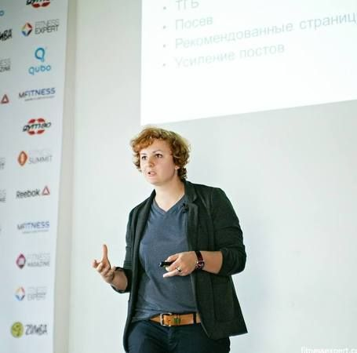
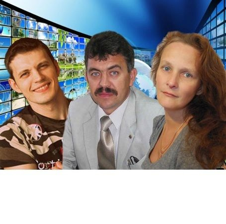
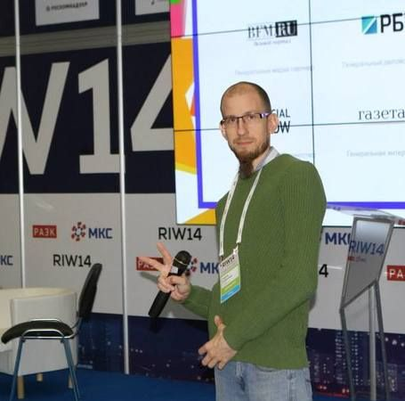
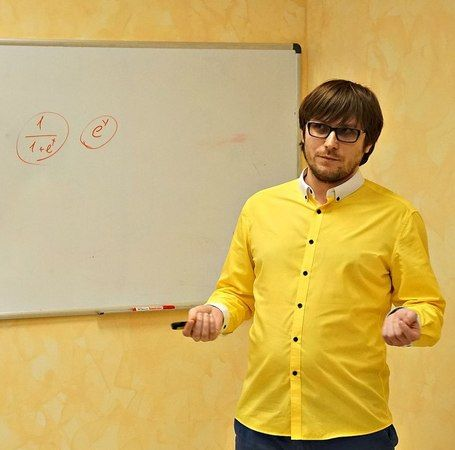
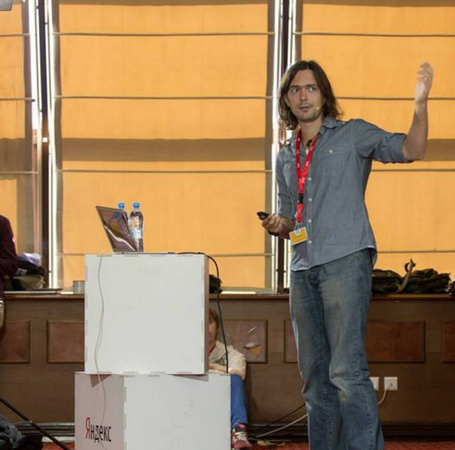

Доклады
-
Терехов Андрей Ruward , Генеральный директор
Digital-стратегия развития бизнеса – сторона клиента, сторона агентства
"Что должна и чего не должна содержать эффективная стратегия развития бизнеса в digital-среде
Подводные камни и тонкие места при разработке стратегии силами клиента
Типовые ошибки агентств при составлении digital-стратегии, вторая сторона баррикад
Эффективная связка клиент-агентство при реализации digital-стратегии" -
 Дугнист Владислав MLWorks , iOS Developer
Дугнист Владислав MLWorks , iOS DeveloperРазработка iOS приложений с MVVM
MVVM позволяет разгрузить Massive View Controller, а в паре с IoC покрыть бизнес логику unit-тестами и избавиться от неприятных сюрпризов после запуска.
- Сравним MVC, MVP и MVVM.
- Что использовать для binding'а, DI и тестирования?
- TDD. Можно ли покрыть приложение тестами, не сдвигая дату релиза? -
 Семенов Сергей, Неверов Андрей Trucker Path , Team lead/Product Owner, Руководитель разработки
Семенов Сергей, Неверов Андрей Trucker Path , Team lead/Product Owner, Руководитель разработкиБез комьюнити – *опа
- Early adopters и как жить после них.
- Где брать пользователей и что с ними делать.
- Не конверсией единой.
- Бизнес-фичи в не-бизнес приложениях.
- Конкуренты и инерция.
- Поговори с пользователем, %username%.
- Кнопки побольше мне запили!
- Приходишь на рынок – разберись. -
Сычев Александр RAMBLER&Co , Инженер-разработчик iOS
Как не выстрелить себе в ногу из конечного автомата
В своем докладе я расскажу, как, используя в iOS-приложении конечный автомат, решить задачу управления сложным объектом со множеством внутренних состояний (контроллер нагруженного экрана, сервис получения данных из разных источников и т.д.) и как при этом не потеряться во множестве переходов.
-
Семенихина Варвара ex Zvooq , ex Head of Performance Marketing
Продвижение мобильных приложений. Как всегда попасть и не пропасть в ТОПе?
1) Математика привлечения: как посчитать, сколько должна стоить установка.
2) Аналитика: что надо сделать, прежде чем начать привлекать пользователей?
3) Выбираем каналы и стратегию привлечения пользователей. -
Прокофьев Евгений Вебпрофитерс , директор по развитию
То, что вам обязательно нужно знать. Показатели эффективности в контент-маркетинге.
Современные тенденции веб-аналитики.
Роль аналитики в контент-маркетинге.
KPI для контент-маркетинга.
Отчеты, которые нужны каждому.
Как превратить данные в решения.
Зачем все это нужно?! -
Шлыгин Александр Unity Technologies , Senior Solution Consultant, EMEA
Unity: больше, чем инструмент для разработки игр
- Unity сегодня: экосистема, кросс-платформенность, роудмап
- Сервисы для разработчиков: примеры использования
- Основы разработки на Unity -
 Ильин Алексей ВГТРК , Руководитель проект Интерактивный Мульт
Ильин Алексей ВГТРК , Руководитель проект Интерактивный МультИнтерактивные продукты для детей
- Текущее состояние рынка детских мобильных продуктов.
- Отношение к интерактивным продуктам для детей. Есть ли перспективы у ниши?
- Взаимодействие с родителями и детьми – война на 2 фронта.
Доклад построен на основе данных исследования "Игры и приложения для детей. Аудитория 2-12 лет" (март 2016). -
 Исраелян Ара PROF-IT VENTURES , Руководитель направления разработки ПО
Исраелян Ара PROF-IT VENTURES , Руководитель направления разработки ПОBackend As A Service (BaaS). Взгляд изнутри.
1. Анализируй это
Мировой и российский рынки облачных решений PaaS и BaaS. Результаты проведенных исследований, финансовые показатели, конкуренция, тренды рынка облачных платформ для разработчиков.2. Проблема выбора
Облако или собственная разработка? Разработка backend – сдерживающий фактор роста стартапов. Преимущества облачного решения и возможные проблемы, которых боятся компании.3. Чего изволите?
Функциональные потребности пользователей. Минимально необходимый функционал BaaS. Фишки существующих сервисов. Идеальный BaaS – какой он?4. Техника вопроса
Погружение в технические проблемы, возникающие на пути к созданию BaaS ""с нуля"". Архитектура – варианты решений. Языки, СУБД, платформы – на чем делать сервис?5. Свято место пусто не бывает. Куда мигрировать с Parse без усилий?
Анонс облачной платформы для разработки backend для веб, десктоп и мобильных приложений SCOROCODE. -
 Страх Николай Предприниматель и трекер ФРИИ ,
Страх Николай Предприниматель и трекер ФРИИ ,Мастер класс. Студии цифровых решений: внутренние и клиентские проекты. Как не облажаться и заработать деньги на стартапе.
- как перейти от проектного бизнеса к масштабируемому;
- топ ошибок студий при работе с внутренними проектами;
- MVP для клиентского стартапа;
- как стартап поможет решать hr задачи. -
 Сергей Кулешов 1С-Битрикс , Заместитель генерального директора
Сергей Кулешов 1С-Битрикс , Заместитель генерального директора1С-Битрикс, Бизнес, как череда успешных ошибок
.
-
Найчуков Константин eLama.ru , эксперт по контекстной рекламе и аналитике
Мастер класс: Работа с подрядчиком по контекстной рекламе: постановка задач, выбор KPI, составление брифа
.
-
Меньшиков Сергей Лаборатория новых медиа , CEO
Дистрибутивная модель распространения контента
.
-
 Раменский Алексей Тэглайн , Главный редактор
Раменский Алексей Тэглайн , Главный редакторПрезентация рейтингов сервисов и технологий для разработчиков, Тэглайн-2016
Тэглайн (в честь своего 10-летия) представит ряд уникальных рейтингов сервисов и технологий, использующихся при разработке веб-сервисов и заказных проектов в digital: wiki-системы, инструменты для дизайна и проектирования, репозитории для хранения кода, языки программирования, backend- и frontend-фреймворки, среды разработки (IDE), СУБД (базы данных), системы контроля версий, серверные операционные системы, мобильные платформы / ОС, краш-репортеры, сервисы для тестирования и сбора статистики мобильных приложений.
=====
Рейтинги будут интересны большинству российских технических и маркетинговых руководителей, отвечающих за подбор технологических решений на digital-рынке, и сотрудникам, которые ломают копья в бесконечных холиварах, какой инструмент или технология лучше.
Теперь мы все посчитали. -
 Юрин Максим Little Big Agency ,
Юрин Максим Little Big Agency ,Современные тренды в SMM
.
-
 Софин Юрий Wizard.Sape , ведущий аналитик
Софин Юрий Wizard.Sape , ведущий аналитик4 рабочих способа как улучшить позиции сайта в поисковой выдаче
• Новый взгляд на семантическое ядро
• Технические ошибки. Как искать и что исправлять
• Мифы о «seo-текстах»
• Покупать или не покупать ссылки -
Арсенкин Александр pixelplus.ru ,
Частые ошибки SEO-специалиста
1. ТОП-10 критических ошибок по SEO
Структура сайта
Внутренние факторы
Анализ данных (причинно-следственная связь)
2. Своевременное обнаружение и исправление ошибок
3. Рекомендации и выводы -
Никитин Иван , основатель «Иван Никитин и партнеры»
AMP страницы на практике — новые и перспективные технологии Google
· Мобильный интернет, насколько он важен
· Проблемы мобильного интернета
· Проект Accelerated Mobile Pages (AMP)
· AMP страницы в выдаче поисковых систем
· Основы AMP страниц
· Разметка и основные элементы AMP
· Использование AMP в передовых CMS
· Ответы на вопросы -
Викторов Денис GeNext , Старший научный сотрудник
Генетика – ключевой компонент инноваций
- О нашей компании GeNext
- Что такое генетика и молекулярная генетика
- Срез истории развития генетики
- Секвенирование нового поколения
- Тесты доступные уже сейчас
- Биоинформатика и крупные проекты в биоинформатике
- Биоинформа́тика в России -
Журавский Василий RuGadget , tech-lead
Как носимая электроника изменит нас
Для чего мы носим вещи?
Почему одни устройства популярны, а другие - нет?
Как создаются носимые устройства?
От чего зависит, что мы будем носить с собой через N-лет?
Как носимые устройства изменят нас? -
 Емельяненко Игорь lunaDVA , production supervisor
Емельяненко Игорь lunaDVA , production supervisorЭффективный видео-монтаж.
1. Сортировка исходного материала - ключ к эффективному монтажу
2. Приемы монтажа
3. Davinci Resolve цвето-кор -
 Зайцев Степан "Мир Правильных игрушек" (mpitoys.ru) , Ответственный за направление интернет-маркетинга в компании
Зайцев Степан "Мир Правильных игрушек" (mpitoys.ru) , Ответственный за направление интернет-маркетинга в компанииКак самостоятельно подготовиться к разработке сайта и сэкономить от 200 000 рублей, без потери качества.
Почему проекты по разработке так часто безуспешны?
Какую роль в процессе должен играть сам бизнес?
Что и как делать при подготовке к разработке, вне зависимости от того, какими IT-компетенциями вы обладаете?
Наглядная инструкция-кейс, основанная на нашем опыте. -
Амирян Андрей Calltouch , Менеджер по работе с партнёрами
Как потратить как можно больше денег на рекламу без отдачи
Способы отслеживания эффективности рекламы с помощью анализа источников звонков
Построение сквозной аналитики
Практические советы, как неэффективно работать с данными
Кейсы -
 Рожнов Александр restream.pro , Software engineer
Рожнов Александр restream.pro , Software engineerМодные технологии на службе добра. Про Kubernetes.
Docker, Kubernetes, контейнеры. Это все очень модно и молодежно. Один вопрос. Как это поможет нам выжить? Переходим от теории к практике применения модных технологий. Как они могут вам пригодиться на деле, с чего стоит начать, опыт хождения по граблям.
-
 Фетюхин Николай MST , Генеральный директор
Фетюхин Николай MST , Генеральный директорЛучшие практики применения ibeacons в рекламе!
- Кратко о технологии
- Лучшие мировые и российские кейсы
- bonus track: рассказ о том, как делали навигатор для Стачки -
 Васильев Дмитрий Netcat , Директор
Васильев Дмитрий Netcat , ДиректорМетодика персонажей-сценариев в проектной работе
Алан Купер - автор методики персонажей-сценариев - придумал её для проектирования информационных систем. Я расскажу о применении её в коллективной работе над веб-проектами - собственными и заказными - начиная с проектирования и заканчивая аудитом и продвижением.
-
Чикин Сергей Altren , Генеральный директор
Умная энергетика
Основной вектор развития энергетики - наполнение ее "знаниями" и высокими технологиями - переход к интеллектуальным сетям и пользовательским сервисам. На смену дома-потребителям энергии приходят дома-генераторы, приносящие доход своим хозяевам. Энергетика будущего - это не громадные чадящие угольные станции, а изящные экологичные конструкции, встраиваемые непосредственно в здания, это получение энергии из ветра, солнца, волн, отходов... Количество используемых девайсов и гаджетов заставляет человека самому превращаться в маленькую электростанцию... Будущее? Нет, уже реальность! В Ульяновске строят первый в России промышленный ветропарк.
-
 Уханова Ольга Stroylab , Менеджер проектов
Уханова Ольга Stroylab , Менеджер проектовМатериалы будущего или как я перестала бояться и полюбила нанотехнологии
Технологические стартапы в мире disruptive economy. Как строить бизнес в экономике знаний. Обзор наиболее интересных тенденций и событий в мире advanced materials - инновационные материалы позволяют реализовать сложные решения и проекты, воплотить смелые замыслы разработчиков. Иллюстрация: инновационные материалы здесь и сейчас - что мы делаем в наноцентре и как это изменит привычные вещи, которые нас окружают.
-
 Пекарский Максим Argenta-team , Lead CG Artist
Пекарский Максим Argenta-team , Lead CG ArtistАнатомия визуальных спецэффектов Голливуда на примере блокбастера Майкла Бея "Трансформеры-2. Месть падших"
- Изнанка создания визуальных спецэффектов ведущих студий Голливуда
- Разбор нескольких эффектов «от» и «до»
- Сравнение технологий и отсыл к другим кинопроектами -
Пашин Василий Производство детской одежды "Утенок" , Учредитель
Совместные закупки как драйвер роста продаж для производителя и продавца
1) Стандартные пути решения: Средний чек, частотность покупок, растим оборачиваемость за счет сетей
2) А что если ...количество клиентов?
3) Как подготовиться и осуществить резкое увеличение числа небольших оптовых клиентов
4) Развитие движения Совместных закупок. Кто такие, стандартные механизмы закупки, где искать
5) Как делать из розничных покупателей оптовых
6) Что им продавать и каким образом
7) Автоматизация совместных закупок средствами Интернет-магазина -
 Захаров Вадим Семантика.Онлайн & Захаров Групп , Руководитель
Захаров Вадим Семантика.Онлайн & Захаров Групп , РуководительСемантика в контентных проектах
- Нюансы сбора семантики для информационных проектов (инструментарий, основные принципы и тд)
- Какие группы ключей использовать сначала и почему. Как посчитать рентабельность статей.
- Нюансы формирования ТЗ по информационному семантическому ядру -
 Мокеев Михаил M-cosmetics ,
Мокеев Михаил M-cosmetics ,Как мы сделали 14632 отправок посылок за год? Без понимания и опыта продаж в интернете.
- Как мы создали наш проект, за обедом у друга в квартире?
- Хаос источник роста. Чем больше хаос, тем быстрее рост.
- Поговорим о показателях: первоначальные затраты, точка безубыточности, кол-во сотрудников, возврат инвестиций, кол-во ассортиментных позиций, оборачиваемость ассортимента.
- Автоматизация внутренний процессов на базе 1с. Выгрузки, отчеты, срм, авто смс рассылки, работа с ассортиментом.
- Онлайн и оффлайн. Какие сейчас приоритеты, что будем делать? Обьем интернет магазина стал равняться 8-ми нашим магазинам в торговых центрах.
- Цели компании и как мотивировать сотрудников на большой рост. Выстраивание отдела продаж. -
Тимофей Шиколенков Боффо.ру, АудиоМания ,
Что мешает небольшим интернет-магазинам вырасти до уровня средних
В России существует огромное количество небольших компаний, имеющих интернет-магазинов. Они создаются и умирают, едва не достигнув средних размеров.
Основная причина - концентрация на привлечении клиентов и мало внимания инфраструктуре. Я расскажу о том, как чуть не умер Бутик Боффо.
Какие были сделаны ошибки, почему они были сделаны, как они были исправлены и как обстоят дела теперь -
 Тюрин Денис АудиоМания , CIO/CTO
Тюрин Денис АудиоМания , CIO/CTOКоммуникация с клиентом. Делаем «хорошо» клиенту и про себя не забываем!
Виды коммуникаций с клиентом
Общение по Email
Контроль и мониторинг
Разработка и внедрение нового функционала в существующую CMS
Результаты и «профит» !!!
Конец переписки -
 Боронин Валерий Positive Technologies ,
Боронин Валерий Positive Technologies ,Построение процесса безопасной разработки - что это означает на практике для разработчиков и их руководителей?
Безопасность - критически важный элемент любого программного решения. Элемент, который, рано или поздно, но заставит вспомнить о себе. Скупой платит дважды, а в данном случае – минимум четырежды. Безопасность и качество кода – связаны напрямую. Поэтому положение дел и с тем и с другим редко находят достаточно хорошим даже в самых успешных проектах – всегда хочется бОльшего. А где-то бывает просто необходим качественный переход и точечными мерами кардинально ситуацию уже не исправить, нужен системный подход.
Вот почему наладить процесс обеспечения и повысить уровень зрелости безопасности разработки, повысить качество кода – хотят многие руководители и разработчики. Как это сделать системно и в согласии? Какие риски для одних, какие трудозатраты для других? И стоит ли овчинка выделки? Об этом и поговорим.
-
 Киселёв Алексей Kaspersky Lab Russia ,
Киселёв Алексей Kaspersky Lab Russia ,Сколько стоит получить DDoS-атаку и как избежать этого «удовольствия»
.
-
Белоенко Максим Qrator Labs ,
DDoS: что делать, когда вас "валят"
Как известно, DDoS-атаки на сегодня выступают одним из методов конкурентной борьбы. Вопросы устойчивости и защищённости являются одним из основных вызовов, стоящих перед разработчиками и системными администраторами интернет-магазинов. Чтобы адекватно ответить на эти вызовы, необходимо правильно оценивать риски. Но как это делать, если, из СМИ мы узнаём что атаки сейчас достигли заоблачных мощностей в 500 Гбит/с, а в качестве средства защиты предлагается сетевое «железо» стоимостью несколько миллионов рублей?В докладе я расскажу как сделать так, чтобы DDoS атака не застала врасплох.
-
Иванов Денис, Крымин Сергей Design Creator, KVINTAGROUP , Креативный директор, PR директор
Опыт разработки фото-видео креатива для международной компании с привлечением селебрити
1. Построение коммуникаций с клиентом, лояльность
2. Работа с клиентом на одной волне и на одном дыхании
3. Бекстейдж тоже работает -
Найчуков Константин eLama.ru , эксперт по контекстной рекламе и аналитике
Ремаркетинг в AdWords
- Задачи веб-аналитики: зачем все эти цифры?
- Как связать Директ с Метрикой. Отчеты статистики в Яндекс.Директе.
- Анализ трафика и эффективности рекламных кампаний.
- Клики есть, продаж нет: поиск проблем и их решение. -
Шуваев Ярослав Альфа Банк , Product Owner Альфа-Мобайл
Управление опытом взаимодействия в гибком производстве, на примере Альфа-Мобайл
В своей лекции Ярослав Шуваев расскажет на примере мобильного приложения Альфа-Банка как планировать и реализовывать улучшения пользовательского опыта продукта в условиях гибкого производства.
UX-стратегия для Agile.
В этом блоке вы узнаете:
- как организовать стратегическое планирование жизни продукта при гибком производственном процессе.
- Как организовывать стратегическую сессию.
- Эффективная команда и эффективные инструменты страт-сессии.
- Результирующие документы.UX-дизайн для Agile.
В этом блоке вы узнаете:
- Как интегрировать дизайн-процесс в гибкое производство.
- Дизайн синхронизированный со scrumboard'ом.
- Организация дизайна с учетом различных тачпоинтов. -
 Оселедько Сергей Notamedia , Управляющий партнер
Оселедько Сергей Notamedia , Управляющий партнерКорпоративная идеология: 3 ценности и 7 принципов аккаунт-директоров и руководителей проектов.
На примере личного опыта, Сергей расскажет о том:
Что такая ключевая идеология и как ее выявить.
Как на основании идеологии сформировать ценности и принципы работы для сотрудников digital-агентства.
Как построить систему управления ресурсами на основе этих принципов и ценностей и как контролировать большой объем ресурсов.Доклад будет полезен как для владельцев веб-студий, так и для клиентов.
-
 Батиевский Юрий Antop , Директор
Батиевский Юрий Antop , ДиректорSEO-аналитика интернет-магазина
- Что анализируем, зачем и как часто
- Инструментарий и отчеты
- Кластеризация запросов
- Анализ товарных категорий -
 Шестаков Александр PR.Sape , руководителя проекта
Шестаков Александр PR.Sape , руководителя проектаПасхальный доклад. Воскреснуть после минусинска.
- современные методики продвижения молодых сайтов
- неочевидные кейсы
- рекомендации по обходу минусинска -
 Макаров Илья Simtech , CTO
Макаров Илья Simtech , CTOОпыт внедрения Scrum в продуктовой команде. Ошибки, эксперименты, результаты.
- Суть Scrum вкратце, и какой от него профит
- Какие ошибки я допустил в процессе внедрения и во что они вылились.
- Как сейчас Scrum работает в нашей компании.
- Как баги вписываются в парадигму Scrum, и как правильно организовать работу с ними. -
 Фолунин Владимир УлГТУ , Преподаватель
Фолунин Владимир УлГТУ , ПреподавательПрограммирование для самых маленьких: опыт преподавания в ДТЦ «Инженерка»
1. Выбор программы: что можно изучать на занятиях, а что — не стоит.
Мы учим десятилетних детей писать на C: как, зачем и нормально ли это?2. Они же дети: как сделать обучение нагляднее.
Какие задачи понравятся детям? Можно ли незаметно ввести (нелюбимую в школе) математику? Какие средства кроме компьютера могут помочь усвоить новые знания?3. Учебный курс, кружок по интересам или что-то среднее?
Что важнее — сформировать нужный набор навыков или пробудить интерес к творчеству? Как, исходя из этого, следует организовывать занятия? Какими могут быть дальнейшие ступени обучения? -
 Нуруллова Альбина МБОУ гимназия №33 , заместитель директора по НИЭР и ИТ
Нуруллова Альбина МБОУ гимназия №33 , заместитель директора по НИЭР и ИТНе стреляйте в информатика - он учит как умеет!
30 лет курсу информатики в школах, пора подводить итоги:
Что мы знаем про ИТ-специальности?
Готовит ли школа своих учеников к обучению в вузе по ИТ -специальности?
Какой язык выбрать при изучении школьного курса информатики?
Учить язык или разбирать алгоритмы?
Абстрактное или конкретное?
Процедурное или объектное?
И где во всем этом ученик? -
Мациевский Николай Айри.рф , Технический директор
Как сделать сайт, который не падает
* Основные технические проблемы отказа веб-проекта
* Подходы "на коленке" или "все по-взрослому". В чем разница?
* Как последовательно повысить отказоустойчивость сайта с 99% до 99,999%: прикладные решения, организационные методы, стоимость инфраструктуры -
 Негода Виктор УлГТУ , профессор
Негода Виктор УлГТУ , профессорПревращение областного чемпионата школьников по программированию в инструмент обучения
Региональные чемпионаты школьников по программированию обычно проводятся как эпизодические мероприятия - один раз в год.
В рамках первого чемпионата ИТ-сферы Ульяновской области среди школьников, проведенного в 2015 году, технологии и средства организации соревнований по спортивному программированию применялись в течение года. Проведено 11 турниров, общее время доступа к машинам автоматической проверки решений - около 15 недель, общее число правильных решений - 1087, что превосходит аналогичные показатели традиционных чемпионатов других регионов во много раз. Возникают многообразные варианты развития турнирного движения в сторону поддержки обучения программированию непосредственно в школах: развитие мотивации, внедрение технологий геймификации, организация постоянного тренировочного процесса. Хочется обсудить эти варианты с заинтересованными людьми. -
Дунаев Михаил Rambler&Co , frontend developer
Визуализация данных в браузере с помощью D3.js
Практический опыт использования библиотеки d3.js для создания инфографики. Загрузка, обработка, связывание и визуализация данных.
-
Каляев Антон FunBox , Software Engineer (Erlang)
Опыт использования Erlang в компании Fun-Box
Расскажу про собственный опыт (полтора года) и опыт компании. Поговорим о:
- проблемах, с которыми столкнулись при написании приложений, и как мы их решили
- какие инструменты используем
- как деплоим
- как дебажим
- личные впечатления от языкаТакже поделюсь впечатлениями от Elixir.
-
 Кумыков Эдуард Elephant Games , Game Designer
Кумыков Эдуард Elephant Games , Game DesignerИстория разработки игры «Sir Match-a-Lot»
«Sir Match-a-Lot» — match-3 адвенчура, созданная «Elephant Games» и выпущенная известным игровым паблишером «Big Fish Games». В своем докладе я расскажу как мы создавали игру, поделюсь фичами и инсайтами.
— Сеттинг: как мы выбирали сеттинг и почему он получился именно таким.
— Арт: о создании персонажей, локаций и других графических составляющих.
— Метагейм: описание игрового цикла, который присутствует в нашей игре помимо match-3.
— Нарративный дизайн: поддержание одной истории на протяжении всей игры.
— Балансировка уровней: самое главное при создании игр жанра match-3.
— Поддержка игры: дальнейшая работа над игрой, поддержка и выпуск обновлений. -
 Кельвич Станислав Postgres Professional , Разработчик
Кельвич Станислав Postgres Professional , РазработчикКвартирник: Как сделать распределенные транзакции в кластере баз данных и почему это важно
Расскажу какие бывают виды изоляции транзакций и транзакционных аномалий; почему неправильный выбор уровня изоляции может угрожать безопасности системы; и как можно сделать распределенные транзакции в кластере баз данных.
-
Герман Станислав Rambler&Co , Руководитель группы , Отдел разработки Ruby
jRuby как инструмент быстрой разработки
- для каких задач подходит jRuby
- как работать с java библиотеками из jRuby
- какие инструменты мы использовали для управления гетерогенными зависимостями
- как тестировать код у которого есть как ruby так и java зависимости -
 Петлинский Павел Рамблер , Ведущий инженер-разработчик
Петлинский Павел Рамблер , Ведущий инженер-разработчикPython 3.5 и asyncio на продакшн
В python 3.4 появился asyncio. До сих пор многие разработчики не знают, что это такое, как реализуется асинхронность в Python и в чем её сильные и слабые места.Повторим пройденное и заглянем под капот. Посмотрим, какие проблемы есть на данный момент в продакшн со стеком Python 3.5/asyncio.
-
 Чернобров Михаил Rambler & Co , Ведущий инженер-разработчик клиентских приложений
Чернобров Михаил Rambler & Co , Ведущий инженер-разработчик клиентских приложенийТестирование фронтенда: миф или реальность?
Перешли на webpack и теперь собираетесь внедрять TDD? Самое время задуматься о том, как это сделать.
В моем докладе я расскажу об этапах конфигурирования webpack в поле видимости unit тестов.
Так же рассмотрим нестандартные случаи, и способы их решения.
С головой окунемся в мир интеграционных тестов. -
 Росс Георгий Авто.ру , Руководитель группы администрирования Авто.ру
Росс Георгий Авто.ру , Руководитель группы администрирования Авто.руСложности переноса проекта из 1 датацентра в распределенную сеть датацентров.
1. Планирование серверного парка
2. Составление схем работы по всему технологическому стеку
3. План миграции
4. Основные проблемы
- Синхронизация кешей
- Распределенный mysql
- Внутреннее балансирование
- Мониторинг (zabbix)
- Оркестрация
5. Нагрузочное тестирование
6. Миграция
7. Отключение старого дц
8. Вопросы -
Страх Николай Предприниматель и трекер ФРИИ ,
Акселератор ФРИИ и Майкрософт: от технологического решения к масштабируемому бизнесу.
- ожидания инвестора и подход к оценке проекта;
- поддержка Microsoft на preseed и seed раундах;
- ускорение: всё или ничего;
- опыт Lastbackend и Турбодирел. -
 Петерсон Дмитрий, Флоринский Алексей SimbirSoft , Заместитель директора, руководитель отдела мобильных разработок
Петерсон Дмитрий, Флоринский Алексей SimbirSoft , Заместитель директора, руководитель отдела мобильных разработокКак попасть в яблочко при оценке мобильных приложений
Оценили на 3 месяца, сделали за 9. Посвящается тем, у кого при фразе «нужно оценить приложение» начинает дергаться глаз. Как полюбить оценку и увеличить вероятность попадания в сроки. В докладе будут рассмотрены различные методики оценки проектов. Поговорим о том:
-как правильно оценивать
-какие проблемы могут возникать
-каких ошибок стоит избегать и как их можно исправить
-дадим оценку разным подходам и на примере кейсов компании СимбирСофт. -
 Макаров Павел, Букина Елена Мастер ИТ , Директор
Макаров Павел, Букина Елена Мастер ИТ , ДиректорКак мотивировать школьников на путь в ИТ: один из подходов
13 лет практического опыта мотивации школьников в информационных технологиях.
Ежегодный региональный Конкурс компьютерного творчества школьников "Мастер ИТ" - путь в 13 лет.
Этапы конкурса, подходы.
Взаимодействие со школами, учителями, вузами, властными структурами.
Мотивация учителя на мотивацию учеников. -
Либерте Ольга, Остриков Илья Фрилансер, VIZART , Арт-директор, Руководитель отдела оперативной графики телеканала «Россия 24»
Тренды в motion design, кино и рекламе
1) Как изменился рекламный рынок во время кризиса.
2) Качество продакшна или дешевизна производства?
3) За что я не люблю супер-скоростной продакшн.
4) Несколько роликов из моего портфолио, где все снято на "зеленку". И они работают!)))Тренды в моушн дизайне: от идеи до реализации. Инструментарий современного моушн-дизайнера.
- Об индустрии моушн-дизайна
Тренды в моушн-дизайне:
- что это
- как появляются, живут и умирают
- тренды вчера, сегодня, завтра -
Шабалкин Дмитрий Ульяновский государственный университет , зам. директора Центра компетенций "Авиационные технологии и авиационная мобильность"
"Цифровое производство". Кадры решают всё
1) IT-решения как основной инструмент "Цифрового производства"
2) Что ждут высокотехнологичные отрасли от выпускника вуза
3) Опережающая подготовка кадров: Как и что должен делать вуз
4) Системные вызовы и системные решения.
5) Обучение "через" внедрение
6) Положительный и отрицательный опыт подготовки и переподготовки носителей IT-решений -
Кашина Анастасия 1DMA , генеральный директор
Email-маркетинг: мощный старт. Как продавать в любой нише без базы с первых писем. Пошаговое руководство.
- Магнит: как привлекать лояльных клиентов вне ценовой конкуренции
- Приветственные серии: нужен ли конфетно-букетный период?
- Контент: по сценарию, а не по расписанию
- Офферы в письмах - агрессия или ложка, которая дорога к обеду? -
 Кухарев Илья Aviasales , ASO manager
Кухарев Илья Aviasales , ASO managerASO-оптимизация и продвижение приложений в Aviasales
— Как увеличить видимость приложения и не оказаться на дне поисковой выдачи.
— Локализация и выход на новые рынки.
— Повышение показателя конверсии из просмотра в установку и уменьшение CPI рекламных кампаний.
— Успешные кейсы и неудачи в Aviasales. -
 Илюхин Алексей Dalee Digital Agency , Head Of Creative
Илюхин Алексей Dalee Digital Agency , Head Of CreativeКак перестать «креативить» и заняться делом
О чем плачет креативщик?
Как «поженить» бизнес-задачи и полет фантазии.
Основные точки несоприкосновения.
Как определить, что креативная идея сработает?
Шесть важных проверочных вопросов?
Источники «полезного» креатива.
Как создавать идеи, решающие бизнес-задачи -
 Кулагин Михаил Postgres Professional , DBA
Кулагин Михаил Postgres Professional , DBAКвартирник: Отказоустойчивый кластер своими руками
1. обзор штатных возможностей отказоустойчивости postgresql
2. возможности pacemaker/corosync
3. сборка вместе и запуск на raspberry pi
4. демонстрация -
Михальский Станислав Mail.Ru Group , Технический директор
Медиапроекты Mail.Ru Group: трудовые будни директора луна-парка или как управиться с десятком "примерно похожих" проектов
Среднесуточная аудитория медиапроектов Mail.Ru Group – это примерно десять миллионов посетителей, генерящих примерно шестьдесят миллионов просмотров. В моем выступлении я расскажу:
· о том, как мы обеспечиваем бесперебойную работу в условиях такой высокой нагрузки.
· об общих для всех этих проектов “узких местах”, а также об индивидуальных продуктовых и технологических нюансах
· о мониторинге, DevOps и эффекте домино при использовании внешних сервисов
· о том, есть ли разница между одним и десятью проектами с точки зрения обеспечения отказоустойчивости, восстановления работоспособности и профилактики ,
· о преимуществах и недостатках масштабирования и кэширования
. о балансе между стратегией и тактикой и о системном подходе к разработке в наших проектах -
Васильев Дмитрий Postgres Professional , инженер-консультант
Квартирник: Беспроблемная эксплуатация PostgreSQL
Администрирование: типичные ошибки при работе с PostgreSQL.
Зачем нужен vacuum?
Bloat.
Wraparound.
Управление памятью.
Балансировка клиентов.
Windows. -
Бартунов Олег Postgres Professional , генеральный директор
PostgreSQL - сегодня и завтра
Мир данных непрерывно меняется — они становятся разнообразнее, все чаще встречается требования онлайн-работы с терабайтами данных и одновременной работы большого числа сервисов. Уже сейчас основными потребителями и производителями данных являются машины, а не человек. Мы спокойно говорим про BigData, многоядерные машины с терабайтами памяти, объединенные в кластеры и петабайтные хранилища. Мир баз данных тоже меняется, появились сотни новых баз данных и это говорит о том, что традиционные СУБД не успевают за новыми требованиями. В тоже время, традиционные универсальные СУБД являются проверенным и надежным инструментом для работы с данными, поэтому они также вступили в гонку за потребителя.
Я расскажу о том, как разработчики PostgreSQL видят его будущее и что уже сейчас он может предложить архитекторам новых приложений. -
Куприянова Елена Телекомпания НТВ , Руководитель проекта НТВ-Digital
Сами с усами: как делают контент для SMM на стороне клиента и в агентствах
1. Клиент всегда прав. Просто у нас разные клиенты
2. Команда на стороне клиента и агентства: плюсы и минусы
3. Зачем отдавать котент на аутсорс агентству
4. Риски есть с обеих сторон, главное, кто пьет шампанское
5. Контент для новостных и развлекательных телеканалов в социальных сетях: агентский и клиентский опыт. -
 Тихонов Станислав Бюро копирайтинга "Флавита" , директор по коммуникациям
Тихонов Станислав Бюро копирайтинга "Флавита" , директор по коммуникациямWhite Paper — будущее российского B2B-маркетинга, которое еще не наступило
Как в B2B за счет White Paper преодолеть барьеры восприятия, сократить цикл продажи, ударными темпами нарастить подписную базу и сформировать экспертный имидж.
— О чем речь? Чем является и чем НЕ является White Paper, мифы и искажения на российской почве
— Когда White Paper на самом деле нужен бизнесу: 5 случаев и несколько историй
— White Paper как элемент маркетинговой системы (наглядно на пальцах и со схемой)
— Нюансы создания White Paper: постановка задачи, выбор формата, объем, структура, сервисы (+ фишки, конечно же)
— Продвижение/посев WP — ресурсы и схемы ""доставки"" до целевой аудитории -
Бабич Татьяна Simbirsoft , Руководитель Frontend-отдела
В поисках идеальной аХРитектуры ui-проекта
Мы знаем что такое "архитектура" - за последний год мы реализовали более 20 ui-проектов различного масштаба - от 200 до 10000 человеко-часов.
Часть проектов сделали "с нуля", часть - "благословенный" legacy код.Чтобы сделать "правильно" мы использовали различные best practice, мы много что перепробовали.
В итоге сейчас мы знаем, как сразу заложить в проект верную архитектуру, чтобы потом не было мучительно больно. Какие фишки фреймворка рационально использовать и когда. Как правильно организовать файлы на активно развивающемся проекте. И многое другое, что теперь облегчает жизнь нашим ui-разработчикам.На докладе мы рассмотрим вопросы проектирования ui-приложения, его архитектуры. Поговорим о сборках и полезных библиотеках. Естественно, расскажем, с какими проблемами мы сталкивались и как их решили.
-
 Гайнуллин Артур Cryptogramm , Руководитель проекта
Гайнуллин Артур Cryptogramm , Руководитель проектаПожалуйста, введите ваш пароль. Дважды!
Знали ли вы, что термин «Двухфакторная аутентификация» был впервые зарегистрирован в 1984 году?
Известно ли вам, что среднестатистическому хакеру потребуется от 1 до 10 секунд на «угадывание» вашего пароля?
А то, что один из самых популярных паролей в 2016 году - пароль «starwars»?
Еще больше фактов, а также практических примеров в докладе "Пожалуйста, введите ваш пароль. Дважды!" . -
Богомолов Александр REDMADROBOT , Дизайнер мобильных приложений
Создание экосистемы дизайна продукта
1. Целостность
Про позиционирование, визуальную часть, копирайт.
2. Гайды и шаблоны?
Приведу примеры хороших и плохих дизайн-систем, расскажу что как и зачем.
3. Экономия ресурсов при шаблонизации и проектировании дизайн-систем
Про ускорение процессов и пользе системного подхода при соблюдении базовых правил
4. Все счастливы
В целом: хочу рассказать о важности красивого, понятного и целостного продукта и о том как этого добиться через свои усилия. -
 Пирог Татьяна НК "Прожект Хармони, Инк" , Координатор проекта
Пирог Татьяна НК "Прожект Хармони, Инк" , Координатор проектаКод-классы.
“Код-Класс” - всероссийская инициатива проекта “Твой курс: ИТ для молодежи” по созданию сети открытых клубов программирования для школьников. Cеть открытых клубов программирования создается, чтобы помочь молодым людям открыть для себя удивительный мир программирования, компьютерных наук и IT профессий. В проекте объединяются талантливые педагоги, которые стремятся к собственному профессиональному развитию и готовы вести за собой учащихся в мир новых технологий. В рамках проекта для школьников и педагогов проводится различные мероприятия, направленных на изучение языков программирования, соревнования и конкурсы, профориентация в ИТ сфере. Из доклада можно узнать: как образовательным организациям стать участником проекта, педагогам повысить свой профессионализм и изучить новые языки программирования и методику преподавания, а школьникам проявить себя в области ИТ и сориентироваться в выбор будущей профессии.
-
 Чернов Евгений qb , Директор по развитию
Чернов Евгений qb , Директор по развитиюСтратегическое планирование. Подводим пользователя к покупке квартиры за 10 000 000 рублей
- правильное описание ЦА;
- выявление мест присутствия;
- разработка медиа плана;
- работа с точками коммуникации с ЦА;
- перевод ЦА из он-лайна в оффлайн;
- учет пользователей, ведение лидов по базам, работа с тренерами CallTouch, CollBack
Все это на живом примере разработки годовой рекламной компании для строительной компании -
Ямкина Елена, Некрасов Дмитрий, Причалов Николай МБОУ СШ №37, МБОУ СШ №29 , МБОУ СОШ №1 , Представители школ
Оснащение школ компьютерным оборудованием и проблема его обслуживания
Процесс информатизации образования
Оценка эффективности
ПК и ПО взаимосвязано?
Отчетность
Обслуживание. Кто? Учитель?
Финансирование (расходные материалы, мелкий ремонт, комплектующие детали)
Информационное образовательное пространство -
 Орлов Дмитрий Ingate , Руководитель информационно-аналитического отдела
Орлов Дмитрий Ingate , Руководитель информационно-аналитического отделаКонтент-маркетинг: секреты успеха от лидера рынка
1. Что вы теряете, не занимаясь контент-маркетингом
Почему контент-маркетинг является одним из ключевых маркетинговых трендов,
на какие цели он работает и как помогает приблизить компанию к достижению
стратегических и тактических бизнес-целей.
2. Многоликий контент – как выбрать правильный формат работы
Существует множество форматов подготовки и распространения контента: публикации на сайте, ведение блога, активность в социальных сетях, публикации и пресс-релизы в СМИ, почтовые рассылки, вебинары и пр.
В докладе будут рассмотрены плюсы и минусы каждого формата, что поможет вам выбрать оптимальный для вас вариант.
3. Делимся опытом
• подготовки и публикации электронных книг, которые читает аудитория в несколько десятков тысяч человек,
• проведения вебинаров, которые собирают сотни слушателей,
• выступления на конференциях,
• ведения рассылок.
В рамках каждой активности будут рассмотрены основные «подводные камни», которых нужно избегать, и результаты, которые вы можете получить. -
 Балакирев Сергей Deoshop.ru , Основатель
Балакирев Сергей Deoshop.ru , ОсновательЕмэйл маркетинг умирает. Что будет дальше?
- Воронки продаж. То о чем многие слышали, но мало кто сделал;
- Как заработать хорошие деньги, продавая в убыток;
- Эффект собачей кости или как генерить цепляющий контент. -
 Василистова Екатерина Gamanoid , PR-директор
Василистова Екатерина Gamanoid , PR-директорИгровая индустрия: особенности, тенденции и тренды
Игровая индустрия развивается бешенными темпами, вовлекая в себя с каждым годом все больше людей и компаний. В своем докладе я обобщу для слушателей тенденции и тренды игровой аудитории, не обойдя вниманием VR, онлайн-трансляции и киберспорт, чтобы у вас было понимание куда развивать свои проекты и на что обратить внимание в этом году.
Работая PR-директором в крупном игровом СМИ, я также хочу поделиться опытом как правильно рассказывать о своей игре не только моим коллегам, но и игровому сообществу. «Как развить свое игровое сообщество? Каковы особенности работы комьюнити-менеджера? Какие типичные ошибки совершают разработчики при общении с журналистами?» — эти и многие другие вопросы мы рассмотрим на моем докладе, открывающем секцию развлечений. -
Батиевский Юрий Antop , Директор
Внедрение новой платформы для интернет-магазина. История одного переезда
-Как мы выбирали платформу
-Проблемы выбора потенциальных подрядчиков
-Сложности и ошибки при разработке
-Безболезненный переезд с улучшением всех показателей -
Феоктистов Александр Яндекс.Маркет , руководитель службы маркетинга
Динамика рынка электронной торговли в России
- Как ведет себя рынок электронной торговли в кризис, данные о продажах товаров в разных категориях на Яндекс.Маркете
- В каких категориях сохраняется высокая маржинальность при растущем спросе, данные Яндекс.Маркета и интернет-магазинов
- Критерии, которые важны для покупателей при выборе товаров и магазинов, данные об использовании параметров на Яндекс.Маркете и результаты специального исследования пользовательского поведения совместно с компанией Gfk
- Развитие неценовой конкуренции -
 Шелехов Роман Redmadrobot , Дизайнер
Шелехов Роман Redmadrobot , ДизайнерТРИЗ для дизайнеров
1. ТРИЗ — теория для инженеров или творческий метод мышления, подход к решению любых проблем?
2. Почему дизайнеру важно научиться решать задачи с помощью систематизации знаний и системных подходов.
3. Что такое идеальный конечный результат и как применять законы развития систем на практике. -
Егорушкин Сергей DPD in Russia , Head of B2C
Школа ИМ. Логистика, склад, упаковка.
- как и почему косячат доставщики и как этого избежать
- как отправлять покупателю то, что он заказал
- когда складу становится "больно" и чем лечить
- как сделать так, чтобы приехало то, что отправлено -
Тюрин Денис АудиоМания , CIO/CTO
Школа ИМ. Как заработать лояльность и что из этого получается.
Можно ли купить лояльность?
Обещания клиентам и их исполнение.
Скидки, распродажи, купоны, акции – хорошо или плохо?
Сегментация клиентской базы и работа с ней, немного о когортном анализе. -
Горбаров Илья Студия Атвинта , Технический директор
Мотивация ИТ-персонала — шаг за шагом
Почему мы вообще поднимаем эту тему? Вовсе не потому, что это такой сладкий пирог для нескончаемых холиваров, где каждому есть что сказать, а потому, что сформировав свое системное видение в этом направлении, мы считаем возможным транслировать его и совершенствовать для себя.
Да, у нас действует почасовая система оплаты труда для разработчиков и дизайнеров и нам удалось сделать ее мотивирующей. Как? Приходите и узнавайте. Очень важно не только работать с теми кто есть, но и формировать себе команду постоянно, на перспективу. Для этого мы используем стажировки, конкурсы и другие методы внимательного и нежного взращивания "тех самых" кадров.
-
 Хаит Юрий Основатель маркетингового агентства Bitkey, веб-аналитик , .
Хаит Юрий Основатель маркетингового агентства Bitkey, веб-аналитик , .Развитие поведенческих факторов брендовым трафиком
- коммуникационная стратегия vs. накрутка поисковых подсказок
- CTR брендового и конкурентного трафика
- учёт брендовых запросов в мультиканальной последовательности
- факторы авторитетности и удовлетворённости пользователя
- реальное влияние на конкурентную выдачу -
Медведев Сергей Potato Monsters CDS , Директор
Маркетинг будущего не делит мир на оффлайн и онлайн.
Маркетинг, как мы его знаем перерождается, подход «войны маркетинговых бюджетов» работает уже значительно хуже, а пользователи ждут индивидуального обращения. К тому же мир переживает смену парадигмы потребления, которая проносится под знамёнами Mobile Shift. Аудитории спокойно просеиваются до индивидов, с информацией о его текущей ситуации(context) и историей взаимодействия с ним. Оффлайн становится более онлайновым и пользователи всё больше ждут этого интерактива в реальном мире. Мы разберём реальные кейсы context-based маркетинга и оффлайн рекламных акций с использованием онлайн инструментов, так же осмотрим стратегии и решения крупнейших интернет компаний и спланируем развитие каналов донесения до пользователя информации, соответственно определимся, как жить дальше и куда лучше бросить свои силы в развитии своих компетенций.
-
Нечаев Андрей Mobirate , Chief Marketing Officer
Аналитические сервисы для мобильных игр: зачем, какие, сколько
Вы сделали классную игру и решили выпустить ее самостоятельно? Время идет, но игра не окупается непонятно почему? В итоге вы плохо спите, мало едите и много пьете? Выход есть: аналитика поможет вернуть вам в жизнь былую гармонию!
На примере игры «RoverCraft Racing» от Mobirate Studios мы рассмотрим какие аналитические сервисы существуют на данный момент (AppAnnie, AppsFlyer, Helpshift, Facebook Analytics, Flurry и др.), чем они отличаются друг от друга и разберемся почему одного сервиса недостаточно для полного погружения в проект. В этом докладе мы также коснемся вопроса почему нельзя обойтись лишь бесплатными сервисами и поговорим как запилить свою in-house аналитику.
Игра «RoverCraft Racing» была выпущена на App Store в октябре 2014 г., — разработка заняла 8 месяцев, проект окупился в течение первых 3 месяцев. На данный момент проект имеет более 2М загрузок, среднее DAU в 60K пользователей и общий рейтинг в 4,5 звезды. -
 Ваказов Рамис SimbirSoft , QA Lead
Ваказов Рамис SimbirSoft , QA LeadUX и UI - почему важно внедрять тестирование на начальных этапах
Когда мы слышим такие фразы, как: "Этим невозможно пользоваться" и "Совершенно неюзабельно", начинаем разбирать каждый из компонентов в отдельности, находим, что все они соответствуют стандартам юзабилити и ожиданиям пользователя, так почему же "этим невозможно пользоваться"?
В докладе речь пойдет о:
- общем представлении юзабилити;
- разделении представления о пользовательском интерфейсе и опыте взаимодействия;
- выгодах раннего внедрения тестирования. -
Miheyenko Maxim FOX3D Entertainment , Producer
Mobile VR: Intro & Мэйкинг-оф проекта «House of Languages»
«House of Languages» — необычный проект, созданный для изучения иностранных языков в игровой форме на базе VR-технологий. Проект зародился как идея для конкурса «Oculus VR Jam 2015», став его бронзовым призером и получив звание «Must Have» from Oculus приложением по мнению жюри. На данный момент проект имеет более 15 тысяч скачиваний, общее число которых увеличивается с каждым днем.
- Погружение в мобильную виртуальность глазами разработчика.
- Отличие разработки ПО для PC и VR-устройств. Обзор платформ.
- Обзор и демонстрация успешных VR-проектов на платформе Gear VR от Samsung.
- Мобильная виртуальность — the Next Big Thing: как запрыгнуть на VR-поезд прямо сейчас. -
 Saks Sven Private Entrepreneur , QA Guru
Saks Sven Private Entrepreneur , QA GuruУправление производительностью и нагрузочное тестирование
У внедрении новых техник и методов QA (да и всей разработки) есть общая проблема люди внедряют новые техники скорее по тому что это модно чем по тому что понимают зачем им это. Данный доклад имеет цель раскрыть вопрос "Зачем?" и только совсем немного вопрос "Как?" в отношении нагрузочного тестирования. И поняв зачем вам нагрузочное тестирование вы сможете с большей эффективность внедрить у себя методики нагрузочного тестирования.
-
Липнягова Карина Drum Pads 24 , CTO, Co-founder
Прокачиваем мобильное приложение с помощью deep links
1. Поддержка deep links - бонус-фича или обязательная функция мобильного приложения?
2. Как сделать поиск по контенту приложения вне приложения?
3. Twitter Cards, App Links, Google Indexing, Universal Links, Spotlight Search, Branch Metrics - разберемся, как это применить для своего приложения.Поговорим о deep links, способах их использования в приложении, удобстве приложения для пользователей и нашем опыте.
-
Колесникова Екатерина TRINITY Digital , iOS-разработчик
Разработка iOS приложений с VIPER
VIPER - это подход к архитектуре мобильных приложений, делящий логику приложения на несколько составляющих с едиными ответственностями. Основными частыми VIPER-модуля являются View, Interactor, Presenter, Entity, и Router.
- Структура VIPER.
- Основные достоинства и недостатки VIPER.
- Переходы между VIPER-модулями. -
 Сурков Владимир Владелец БРАШОП , директор по развитию "Скобеев и Партнеры"
Сурков Владимир Владелец БРАШОП , директор по развитию "Скобеев и Партнеры"Как взаимодействовать с аудиторией в эпоху рекламного шума?
- Значение контент-маркетинга в эпоху рекламного шума
- Какие задачи может решать контент-маркетинг
- Типы контента и способы их создания
- Видео, фото, обзоры, storytelling - что рассказывать и показывать
- Каналы распространения: платные, бесплатные, кросс-маркетинг^ партнеры
- КЕЙС: Brashop.ru – контент-маркетинг для нишевого проекта: от открытия магазина до лидера в своей нише -
 Якубов Алишер 2reallife , Executive Producer
Якубов Алишер 2reallife , Executive ProducerЖизнь после релиза: управление игровыми f2p-проектами по метрикам
Разработчики боятся выпускать проекты недоделанными, затягивая разработку из-за собственных страхов, — в итоге они выдыхаются или у них заканчивается бюджет задолго до выпуска. После релиза они ожидают, что сразу увидят возврат инвестиций, но в реальности оказывается, что денег нет и что надо было выпускать проект намного раньше, чтобы иметь возможность опираться и делать выводы на живых данных, а не на собственных галюцинациях.
Мы рассмотрим базовые метрики, помогающие управлять проектами «по-зрячему» – ARPU, ARPPU, конверсия в первую и вторую покупки, а также Retention Day 1, 7, 14 и 30, – их прямое влияние на доходы и средние по рынку цифры, на которые можно опираться при оперировании игровыми проектами.
-
 Елеськин Григорий SeeSaw Labs , Go developer
Елеськин Григорий SeeSaw Labs , Go developerPony - убийца...?
- У вас на чердаке лежат сервера с 64-и ядрами и более?
- Вы уже устали от того, что у вас простаивают миллионы гигагерц?
- Или в конце концов, вы хотите очень быстрый Эрланг?Тогда вам, как и мне, не терпится увидеть данный язык среди различных (Go, Scala, Erlang, Elixir, Rust, etc...) и начать писать на нем крутые штуки в продакшен.
-
 Доронина Ольга Fox3D Entertainment , Project Manager
Доронина Ольга Fox3D Entertainment , Project ManagerMobile VR: Мэйкинг-оф проекта «VirtPaint»
«VirtPaint» VR — уникальный проект, позволяющий рисовать без помощи рук.
Тезисы:
— Давайте поговорим о виртуальной реальности.
— Как создавалось приложение «VirtPaint»: от концепции до реализации.
— Основная идея, цель и возможности приложения.
— Простота, инновации, юзабилити.
— Грабли, на которые мы наступили.Немного фактов:
— Команда разработчиков получила приглашение о сотрудничестве от организации SpecialEffect UK, работающей с людьми с ограниченными возможностями.
— Приложение участвовало в конкурсах «VR Jam 2015», «AT&T NYU Connect Ability Challenge»
— VirtPaint вошел в топ - 40 лучших приложений, из 350 участвующих в конкурсе и попал в выборку «7 interesting and unusual Mobile Jam VR entries for the GearVR 2015». -
Фазлыева Алина Ecwid , PR Director
Блог, который продает. Опыт Ecwid, известного во всем мире конструктора интернет-магазинов.
Я расскажу как правильно создавать блог – от поиска идеи, создания контента до его продвижения и измерения. Поговорим об аудитории (как понять, кому писать?), о идее поста (почему функция преобладает над формой?), о структуре поста (как использовать ключевые слова?), о продвижении (от платных до бесплатных вариантов), об анализе (как померить продажи?).
-
 Скрябин Родион Лаборатория новых медиа , Co-Founder & COO
Скрябин Родион Лаборатория новых медиа , Co-Founder & COOПродвижение на YouTube. Как работать с лидерами мнений.
Кейс компании «Нетология-групп» (бренды «Нетология» и «Фоксфорд»)
1. Предпосылки: организация лидогенерации
2. Контент-маркетинг и лидогенерация через видео
3. Контент-маркетинговые видео «Нетологии»
4. Контент-маркетинговые видео «Фоксфорда» в проекте «Фоксфорд.Учебник»
5. Проблемы контент-маркетинговых видео в проектах
6. Лидогенерация через видеоблогеров
7. Выбор ресурсов, критерии, организация
8. Выбор интеграции: прямая и нативная интеграции
9. Сценарии и материалы
10. Дорожные карты пользователей
11. Бюджетирование и оценка результатов
12. Почему стоит работать с ,блогерами?
13. Как правильно работать с блогерами? -
 Токовинин Михаил AMOcrm, Qsoft , Founder & Managing Partner
Токовинин Михаил AMOcrm, Qsoft , Founder & Managing PartnerЗачем в AMOcrm мы бесплатно учим своих клиентов продажам?
Что нам дают обучающие активности, зачем мы в них вкладываемся?
-
 Дединский Илья МФТИ , старший преподаватель
Дединский Илья МФТИ , старший преподавательАналитический подход к довузовскому преподаванию программирования
Программисты в России часто растут «как трава». Ее никто толком не выращивает, она «сама» пробивается сквозь асфальт и камни, ЕГЭ и олимпиады. Хорошо ли это?
Этот доклад о том,
- как вырастить потенциального IT-профессионала еще в школе, и не во вред другим предметам,
- как не переучивать многократно школьника - в вузе, студента - на работе,
- как не получить спортсмена-олимпиадника, теряющегося от программы в тысячу строк и не умеющего толком применить любимые им алгоритмы,
- как получить от вуза максимум, на который преподаватели, может быть, даже и не рассчитывали, :)
- как повысить качество отечественного IT-образования и начать выпускать, наконец, конкурентоспособных специалистов не чудом, а по плану. -
Кочакова Маша Royal Troupe , CEO
Самиздат игры: окупился ли «Message Quest»?
В октябре 2015 года в Steam — основной цифровой магазин компьютерных игр — вышла игра «Message Quest», весной 2016 состоялся релиз игры на мобильных платформах. Это первая игра небольшой студии Royal Troupe, которая разрабатывалась «за свой счет» и вышла без издательской поддержки. Время подвести итоги. Есть ли жизнь после релиза? Есть ли надежда для независимых команд? Можно ли жить на доходы с игры?
-
Сафонов Александр RealXenon.ru , управляющий партнёр
Резать больно только в первый раз или кого сокращаем в кризис?
В этот раз мы поговорим больше про оффлайн деятельность любого Интернет-Магазина. А именно - увольнении кадров для снижения затрат.
- Решить ли автоматизация все вопросы?
- Кем из сотрудников можно ""пожертвовать""?
- Свои продавцы или сторонний call-center?
- Насколько важно иметь программистов в штате?
- Сокращаем ассортимент для сокращения расходов -
 Кварацхелия Александр Онлайн бухгалтерия "Небо" , Архитектор
Кварацхелия Александр Онлайн бухгалтерия "Небо" , АрхитекторБоты в Telegram: технология и её применение
Летом 2015 г. в набирающем популярность месенджере «Telegram» появилась возможность создания ботов, которые могут выполнять широкий спектр задач, автоматически обрабатывая и отправляя сообщения. Уже сейчас мы можем переводить тексты, искать авиабилеты, удаленно смотреть за счетчиками воды и света, а также просить ботов напоминать нам о важных событиях.
Во время доклада мы рассмотрим технологию создания, развертывания и функционирования ботов на нескольких показательных примерах. Мы будем использовать python + django на сервере и попробуем создать боты для решения некоторых математических задач, а также для аутентификации пользователей в системе. Доклад будет полезен тем, кто задумывается о клиентоориентированности.
-
 Горностаев Алексей Фэтфокс , Генеральный директор
Горностаев Алексей Фэтфокс , Генеральный директорКомплексный маркетинг по Agile Scrum (гибкое планирование)
Доклад для владельцев и руководителей компаний, менеджеров проектов и директоров по маркетингу в малом и среднем бизнесе.
- Маркетинг в России и в мире
- Влияние маркетинга на прибыль компании
- Структура комплексного маркетинга
- Проблемы классического подхода к маркетингу
- Фокус на потребителе и изменениях в маркетинге
- Принципы и преимущества гибкого планирования в маркетинге
- Сравнение классического и agile-подхода в маркетинге
- Два типа команд в agile-маркетинге
- User stories и цели как базис для стратегических и тактических решений
- Движение к целям в agile-маркетинге
- Принцип ТОП-1 и ТОП-5
- Итерации (спринты) в agile-маркетинге
- Доска задач
- Ретроспективный анализ и стратегические сессии в agile-маркетинге
- Инструменты для управления маркетингом по agile
- Внедрение agile у себя в компании -
Ключников Алексей XiMAD , Разработчик
Серверная сторона мобильных приложений. Erlang style: принципы создания интерактивного масштабируемого сервиса.
Програмирование
Server Side
Hi-load
Erlang
Решардинг без остановки
Мобильные приложения -
 Причалов Николай МБОУ СОШ №1 р.п.Новоспасское , учитель физики и информатики
Причалов Николай МБОУ СОШ №1 р.п.Новоспасское , учитель физики и информатикиОснащение школ компьютерным оборудованием и проблема его обслуживания
Процесс информатизации образования
Оценка эффективности
ПК и ПО взаимосвязано?
Отчетность
Обслуживание. Кто? Учитель?
Финансирование (расходные материалы, мелкий
ремонт, комплектующие детали)
Информационное образовательное пространство -
Некрасов Дмитрий МБОУ СШ №29 , Зам. директора по ИКТ
Оснащение школ компьютерным оборудованием и проблема его обслуживания
Процесс информатизации образования
Оценка эффективности
ПК и ПО взаимосвязано?
Отчетность
Обслуживание. Кто? Учитель?
Финансирование (расходные материалы, мелкий ремонт, комплектующие детали)
Информационное образовательное пространство -
 Мокевнин Кирилл hexlet , Со-Основатель
Мокевнин Кирилл hexlet , Со-ОсновательИсследования и опыт хекслета в обучении разработчиков
- С чем приходят люди. Опасные ожидания.
- Почему одних курсов недостаточно.
- Как онлайн курсы могут испортить мышление.
- Страхи и Ловушки в которые попадают новички.
- Важность ограничений в обучении.
- Способы организации выполнения практики. Влияние на скилл. -
 Чебулаев Олег Perpetuum Mobile Lab , Технический директор
Чебулаев Олег Perpetuum Mobile Lab , Технический директорМобильная база данных Realm. Прошло ли время SQLite?
- Что такое Realm?
- Сравнение произодительности мобильных баз данных
- Как работает Realm и почему его стоит использовать
- Опыт создания продуктов с его использованиемПри разработке мобильных приложений неизбежно возникает вопрос о том, как и где хранить данные. Tрадиционно выбор происходит между SQLite, Core Data либо хранением сериализованных данных в файлах. Но на сегодняшний это не все, что есть на рынке технологий. Realm — стартап, разработавший базу данных для хранения и доставки данных на мобильные устройствах, набирающий популярность среди разработчиков и получивший $20 миллионов инвестиций в середине прошлого года. Realm установлена на более чем на 100 миллионах устройств и используется такими компаниями как BuzzFeed, Expensify, Groupon, Intuit и Rite Aid. В своем докладе я подробнее расскажу про Realm — самую удобную и очень быструю базу данных.
-
 Латыпов Артур SEO-Интеллект , Руководитель SEO отдела
Латыпов Артур SEO-Интеллект , Руководитель SEO отделаТекстовые факторы ранжирования: Обзор и воздействие.
- текстовое ранжирование
- подробный разбор факторов
- формула текстовой релевантности bm25(f)
- примеры воздействия -
 Остриков Илья VIZART , Руководитель отдела оперативной графики телеканала «Россия 24», куратор факультета "Моушн-дизайн" в ScreamSchool
Остриков Илья VIZART , Руководитель отдела оперативной графики телеканала «Россия 24», куратор факультета "Моушн-дизайн" в ScreamSchoolТренды в моушн дизайне: от идеи до реализации. Инструментарий современного моушн-дизайнера.
- Об индустрии моушн-дизайна
Тренды в моушн-дизайне:
- что это
- как появляются, живут и умирают
- тренды вчера, сегодня, завтра -
Батиевский Юрий Antop , Директор
Школа ИМ. Управление ассортиментом в условиях ограниченности человеческого ресурса
- Что делать, если товаров много, а товароведов нет
- Как могут помочь сервисы Яндекса
- Как автоматизировать процесс ценообразования
- Плюсы и минусы своих остатков -
Сафонов Александр RealXenon.ru , управляющий партнёр
Школа ИМ. Продажи без оператора, миф или реальность
Цель магазина - продажи, но не возможно строить долгосрочных отношений без постпродажного обслуживания клиентов.
- Даже вы не знаете своих клиентов лучше, чем аналитика
- Для чего нужны операторы?
- Построение Интернет-магазина без операторов. Почему нет?
- Как мотивировать продавцов/операторов?
- Какие бывают риски и как от них страховаться? -
 Севальнев Дмитрий pixelplus.ru , руководитель департамента SEO
Севальнев Дмитрий pixelplus.ru , руководитель департамента SEOПрактические рекомендации для SEO-специалиста 2016
1. Рандомизация выдачи
- общие принципы
- идентификация и проявление «бандита»
- плюсы и минусы для SEO2. Что делать со ссылками?
- текущий учёт ссылочных факторов
- фильтрация коммерческих ссылок Яндексом
- рекомендации по работе3. Продвижение сразу в нескольких регионах
- два различных подхода
- работа в рамках одного поддомена / хоста
- требования к содержанию -
Немытченко Иван GitLab , Developer Advocate
Почему диплома недостаточно для того чтобы стать программистом и как быть
В российском высшем образовании, кажется, не разочаровались только совсем законченные идеалисты. Многие соглашаются с тем, что оно "учит думать", но практических навыков дает меньше, чем хотелось бы. Наиболее сообразительные практикуются самостоятельно с самых первых курсов. Но речь не столько о навыках программирования, сколько о навыках разработки программного обеспечения. Разберемся, чем одно отличается от другого и где набираться недостающего.
-
Сергей Кулешов 1С-Битрикс , Заместитель генерального директора
Бизнес-девелопмент для Saas-сервисов: дизайн-проектирование стратегии
Разработка Saas и вывод его на рынок становится все более сложной задачей в современных условиях. Стоимость привлечения новых пользователей зачастую превышает заработок на клиенте (LTV), но еще хуже дело обстоит с разработкой стратегии сервиса до начала программирования. Давайте порассуждаем о современных реалиях и сделаем бизнес-девелопмент обязательной частью проектирования.
-
 Шведова Анна Simbirsoft , аналитик
Шведова Анна Simbirsoft , аналитикБыли бы кости, а мясо нарастет: как вырастить аналитика из того, что приплыло
Расскажу, как выявить потенциального бизнес аналитика из тех, кто никогда этим не занимался. Через что проходят соискатели сами того не подозревая, и почему мы в конце семи кругов собеседований знаем о кандидате больше, чем он сам о себе.
Что должно произойти, чтобы человек осознал в себе призвание и начал раскрывать свои таланты.
В докладе поделюсь «непрофессиональным хитростями», которые мы протестировали на себе и применяем на собеседованиях. -
Идрисов Ренат MachineZone , Team Leader
Как измерить latency
Казалось бы, ничего сложного: берём время после, вычитаем время до и получаем заветное время реакции системы, но это работает только для одиночных измерений. Проблемы начинаются когда таких чисел становится много. В докладе я расскажу про наш опыт, который мы получили в процессе измерения latency событий, приходящих со скоростью 100 миллионов в секунду. Будут рассмотрены алгоритмы сэмплирования и их проблемы, ложь персентилей и влияние измерений на систему. Кроме того, речь пойдёт и о правильных способах, при помощи которых можно перестать обманывать себя и окружающих относительно скорости реакции системы.
-
 Кибалко Кирилл Быстроденьги , CIO
Кибалко Кирилл Быстроденьги , CIOУправление релизами в федеральной компании: на что мы потратили более 150 миллионов рублей?
- Внедрение проектов в финансовом секторе
- Управление релизами
- Стратегия внедрения проекта в точные сроки -
 Святов Кирилл УлГТУ , декан ФИСТ
Святов Кирилл УлГТУ , декан ФИСТСовременное ИТ-образование в высшей школе: между трех огней
- Современные студенты. Поколение Z. Что изменилось за 20 лет?
- Специфика работы вузов в системе "государство - бизнес - общество".
- Высшее ИТ-образование для специалистов на долгом пути "школа - вуз - ИТ-отрасль".
- Системный подход или узкая специализация? Для чего нужно высшее образование в ИТ?
- Инновации и техническое творчество. Просто модная тенденция или вызов для ИТ-компаний?
- Вузы в системе повышения квалификации ИТ-профессионалов. -
 Чельцов Степан, Лукашевич Ольга ,
Чельцов Степан, Лукашевич Ольга ,Школа ИМ. Эффективный старт в интернете. Минимум действий, максимальный результат
- Первичная настройка и запуск сайта
- Конкурентная разведка
- Определение главных каналов продаж
- УТП
- Первичные бизнес-процессы
- Почему важны детали?
- Выстраивание бизнес-процессов.
- Cross KPI.
Рабочие материалы:
- чек лист по конкурентному анализу
- пример P&L (Отчет о прибылях и убытках / доходах и расходах) -
 Старостин Дмитрий МБОУ Лицей при УлГТУ , учитель информатики и ИКТ
Старостин Дмитрий МБОУ Лицей при УлГТУ , учитель информатики и ИКТОт игры к профессии: создание благоприятной IT-среды для школьников.
Как воплотить интерес в увлечение? Как легко создать игру (на примере Unity) и параллельно освоить профессиональный язык программирования? Как сделать первый шаг на пути к желанию стать программистом? Проведённый эксперимент (в виде краткого внеурочного курса) по превращению обычного школьника в увлечённого программированием человека расскажет Вам об этом. Вы узнаете:
-какие инструменты задействовали;
-как расставили приоритеты;
-наши планы по продвижению курса на будущее. -
Ткачев Василий allintop.ru ,
Работа с молодыми сайтами в эпоху борьбы со ссылками
- Можно ли получить поисковый трафик всего за месяц?
- Как подогреть интерес поисковых роботов?
- Первоочередные SEO задачи
- Контент, его распространение и весомость -
Анисимов Андрей ООО "Реаспект" , Директор "Реаспект-Промо"
Как внедрить сквозную аналитику? Как с её помощью увеличить доходность бизнеса?
1) Что такое Performance-Marketing? За что должно отвечать агентство при такой модели работы.
2) Как должна быть организована аналитика рекламных каналов для эффективной работы.
3) Внедрение CRM в бизнес клиента (услуги) на примере Битрикс-24.
4) Внедрение CRM в бизнес клиента (продажи) на примере Retail-CRM
5) Технология интеграции CRM и Google Analytics понятными словами
6) Технология импорта данных о расходах на рекламу с разных рекламных каналов простыми словами
7) Организация сквозной аналитики.
8) 3 кейса о повышении эффективности интернет-маркетинга за счет правильной организации сквозной аналитики. -
 Рахимбердиев Аскар МойСклад , Генеральный директор
Рахимбердиев Аскар МойСклад , Генеральный директорПроцесс разработки в МоемСкладе: анархия под контролем
- Отбор тикетов в разработку: соревнование и баланс
- Большие ежемесячные релизы vs. Continuous integration
- Информированность всей команды
- Если что-то пошло не так: контроль качества и мониторинг -
Ямкина Елена МБОУ СШ №37 , Заместитель директора по ИКТ
Оснащение школ компьютерным оборудованием и проблема его обслуживания
Процесс информатизации образования
Оценка эффективности
ПК и ПО взаимосвязано?
Отчетность
Обслуживание. Кто? Учитель?
Финансирование (расходные материалы, мелкий ремонт, комплектующие детали)
Информационное образовательное пространство -
Власенко Олег СимбирСофт , заместитель директора
Где и как найти "профи" для растущей ИТ компании?
Все говорят: "Людей нет!". Все говорят: "Вузы не те! Студенты - никакие!". Все говорят: "Профи не лояльны, они уходят на "+1" рубль к конкурентам". Все говорят: "Лучшие уезжают в Москву!". И все они правы!
Тогда вопрос - а как появляются и растут в регионе, множество ИТ компаний реально мирового уровня, которые входят в лучшие рейтинги страны, которые являются мировыми лидерами в своих сегментах?
На примере самой большой региональной компании, успешно растущей уже много лет, я расскажу, как в условиях жесткой конкуренции, в условиях страшного дефицита, в условиях поколений Y и Z, мы успешно находим "профи", которые и составляют нашу компанию.
-
Alvaro Videla RabbitMQ , Core Developer
What We Talk About When We Talk About Distributed Systems
Distributed Systems are a complex topic. There's abundant research about it but sometimes it is hard for a beginner to know where to start. I would like to outline the main concepts of distributed systems, so the interested person can have a clear path on how to start their own research as well.
In this talk I will review the different models: asynchronous vs. synchronous distributed systems; message passing vs shared memory communication; failure detectors and leader election problems; consensus and different kinds of replication.
I will also review a series of books on distributed systems in order to recommend the best one according to the topics we would like to learn about, or the problems we would like to solve.
The goal of the talk is to set a good foundation for people interested in learning more about distributed systems.
-
 Рязанский Сергей Роскосмос , космонавт-испытатель
Рязанский Сергей Роскосмос , космонавт-испытательВзгляд из космоса.
Что надо знать чтобы полететь в космос. Кого берут в космонавты. Все цели достижимы, главное знать куда копать :)
-
 Иноземцев Александр Headhunter , Ведущий разработчик
Иноземцев Александр Headhunter , Ведущий разработчикCбор отчетов об ошибках и мониторинг производительности клиентского Javascript
На примере hh.ru обсудим:
- зачем собирать информацию с клиентских браузеров и как правильно это делать;
- Real user monitoring (RUM), что можно покрыть мониторингом в браузере, что делать с этой информацией;
- обзор текущих решений для сбора отчетов об ошибках;
- наша инфраструктура сбора ошибок;
- идентификация запроса и воспроизведение ошибки;
- подводные камни: соотношение сигнал/шум, различные браузеры, sourcemaps, rate limiting;
- workflow обнаружения и решения javascript ошибок; -
Сидорин Дмитрий Sidorin LAB ,
Репутационное seo без бюджета
- Факторы ранжирования serm
- Продвижение существующих площадок или создание новых
- Появление социальных сетей в serp
- Нестандартные площадки: slideshare, ответы mail и др.
- Оценка результатов serm
- Как делать serm бесплатно
- Право на забвение и суды с площадками -
 Обмелюхин Владимир, Чернов Евгений qb3d , Руководитель и совладелец
Обмелюхин Владимир, Чернов Евгений qb3d , Руководитель и совладелецАрхитектурная визуализация - точка отсчета в продажах недвижимости
- Архитектурная визуализация - важный элемент в представлении объекта недвижимости, точка отсчета любого проекта
- подбор стилистики под ЦА, с примерами работ с крупнейшим компаниями недвижимости РФ
- лаги в визуализации, которые портят все
- портирование объекта на разные носители и функциональные области применения: печатка/сайт/подбор квартир/touch-панели
- дополненная реальность объектов, почему не пользуются строители? -
 Гуслева Анастасия Uplab , HR-менеджер
Гуслева Анастасия Uplab , HR-менеджерЗнания — очень странный предмет: вроде бы есть, а вроде бы нет. Как мы строили систему управления знаниями.
- Кому? Зачем? Для чего вообще нужна СУЗ
- Что такое знания и в чем их отличие от данных и информации
- Как из хаоса получить систему
- Разделяй и властвуй. Хранение информации, доступы и защита. Почему это важно.
- Создать - не главное. Как добиться, чтобы система жила. Внедрение и развитие. -
Немытченко Иван GitLab , Developer Advocate
GitLab. Хостим вашу разработку, а не только репозитории
Покажу как выглядит процесс разработки софта с GitLab и расскажу про то:
- какие преимущества дает встроенный CI (Continuous Integration)
- как свалить всю рутинную работу по генерации статических сайтов на GitLab Pages
- насколько просто устанавливать и обновлять GitLab с помощью omnibus
- кто платит за бесплатность GitLab CE и GitLab.com
-
Яковлев Антон Интерактивное агентство Кельник, ООО "Планоплан" ,
Виртуальная реальность - вчера, сегодня и завтра.
1. Зарождение технологии
2. Перспективные области применения и развития
3. Приближаем будущее -
 Горелкина Мария Microsoft , Технологический евангелист
Горелкина Мария Microsoft , Технологический евангелистDevOps и разработка мобильных приложений
Разработка мобильных приложений в парадигме DevOps и возможности технологического стека Microsoft. От управления исходным кодом, до автоматического предоставления новой сборки на следующий этап.
-
Шигабетдинов Марат ITECH , директор по маркетингу ITECH.mobile
Wizl: сложные триггерные коммуникации и Telegram-бот для возвращения пользователей в приложение и увеличения числа покупок
1. Триггерные взаимодействия. Выбор стратегии, основные отличия moblie от web.
2. Мобильная аналитика: проблемы, с которыми можно столкнуться при выстраивании системы триггеров.
3. Выбор источников трафика. Персонализация сообщений в медийной рекламе, социальных сетях, push-уведомлениях и email-рассылках, основанная на триггерах. Успешные кейсы.
4. Telegram-бот – модная фича или действительно полезный помощник.
Wizl — мобильное приложение, персональный помощник по подбору подарков, который не раз был зафичерен на App Store и обрел свою нишу преданных пользователей. -
Волошин Дмитрий Mail.Ru Group , Директор департамента исследований и образования
Нанимать нельзя учить. Где поставить запятую, если речь идет о студентах?
В докладе будет резюмирован пятилетний опыт создания программ обучения разработчиков на базе крупнейших технических вузов, а также стажерской программы в крупнейшей российской интернет-компании. Основные вопросы:
- как продать бизнесу стажерскую программу?
- как продать коллегам обучение в вузе?
- как продать вузу обучение на его базе?
- как продать студентам обучение от компании?
- как продать студента как стажера в компании? -
 Кириллов Дмитрий VRAR Lab , Генеральный директор
Кириллов Дмитрий VRAR Lab , Генеральный директорЧто такое виртуальная реальность и где она нужна?
- Обзор VR тхнологий
- Объем рынка
- Сферы применения
- Кейсы
- Перспективы -
Никитин Иван , основатель «Иван Никитин и партнеры»
Использование семантической (структурной) разметки на сайтах и ее влияние на поисковое продвижение
· Назначение смысловой разметки
· Основные стандарты, используемые для структурированный разметки
(микроформаты, микроданные, схемы разметки)
· Особенности schema.org
· Способы внедрения разметки на страницах сайта
· Основные схемы, рекомендуемые используемые для сайтов e-Commerce
· Способы проверки корректности разметки
· Ответы на вопросы -
 Бурлаков Михаил Oyster , тех. специалист
Бурлаков Михаил Oyster , тех. специалистUser Defined Functions: зоопарк в зоопарке
В презентации обсуждаются вопросы, связанные с применением UDF в SQL и NoSQL базах данных. Описываются основные достоинства и недостатки применения как в общем случае в рамках информационной системы, так и в более частном - на конкретных базах данных. Даются общие описания реализаций того, как это устроено на различных платформах БД и какие были придуманы костыли для решения наиболее актуальных задач с применением механизма UDF. Поднимается проблематика отсутствия единого подхода в построение UDF механизмов.
-
Блохин Леонид Provectus , Big Data Engineer
Дружим языки Scala и Python
Scala (Martin Odersky) & Python (Guido van Rossum)
Подружим эти два замечательных языка, настало время разрушить границы!
Что мы разберем в процессе моего выступления:
- Как питонить в скале! Прямо в JVM не отвлекаясь на такие мелочи, как интерпретатор Python!
- Как скалить из питона! Или как взывать к JVM!
- Как питонить, и не только, из скалы! Сразу на несколько разных интерпретаторов!
- Четыре очень полезных инструмента, если Вы немного сумашедший, и собрались это делать!
В выступлении гарантирую примеры кода! -
 Савунов Василий Scrumtrek , Коуч
Савунов Василий Scrumtrek , КоучScrum-мастер, управленческий минимум
Всем хочется, чтобы их команда разработки была самой эффективной, дружной, и в идеале - самоорганизованной.
Но для того,чтобы этого достичь, нужно понимать что происходит с группой с течением времени, нужно быть в курсе групповой динамики.
В докладе мы разберем, как группа влияет на своих членов, что происходит в процессе развития группы, разберем как группа принимает решения, и как ей помочь выработать жизнеспособное соглашение. -
 Ивлиев Роман ИА "Банки.ру" , Директор по информационным технологиям
Ивлиев Роман ИА "Банки.ру" , Директор по информационным технологиямКак мы делаем Банки.ру
Я расскажу реальную историю эволюционирования процесса разработки и эксплуатации наших порталов, поведаю с каким сложностями мы сталкивались и продолжаем сталкиваться, а также какие решения помогают нам делать портал лучше, а его работу стабильнее и быстрее.
Мы не претендуем на высокие места в рейтинге самых технологичных и самых высоконагруженных. Вряд ли вы найдёте в докладе глубокие технические детали а-ля ""так классы уже никто не пишет"" или ""а давайте всё перепишем на go"", а вот про грабли, по которым мы прыгаем на костылях, про то, чем мы пользуемся, а чем не пользуемся совсем, я обязательно расскажу. Я постараюсь, чтобы было много реальных примеров из жизни относительно небольшого подразделения (нас 35, включая админов, архитектора, саппорт и менеджера в лице меня), а не известных парнокопытных в вакууме. -
Юнев Владимир Microsoft , старший эксперт по стратегическим технологиям
.NET теперь открытая платформа, запуск приложений на OSX и Linux
В рамках этого доклада мы рассмотрим как платформа .NET становится полностью открытой платформой с открытым исходным кодом и процессом разработки. Как можно начать работать на платформе на ОС Linux и OSX, что для этого сделать. Как разрабытвать и хостить веб-приложения на базе ASP.NET в Linux и Windows, а так же любом облачном хостинге. Мы научимся писать код на .NET с помощью Visual Studio Code на любой операционной системе.
-
Юнев Владимир Microsoft , старший эксперт по стратегическим технологиям
Опенсорс в облаке Azure – как эффективно запускать и выдерживать высокие нагрузки в облаке в стеках LAMP и MEAN
В рамках этого доклада мы рассмотрим текущее состояние облачных технологий Microsoft и платформы Azure для запуска решений на базе открытого кода,таких как MEAN (MongoDB + Node.js) или LAMP (PHP + MySQL), а так же любых других. Мы рассмотрим как облачная платформа помогает сократить расходы и увеличить скорость выпуска продуктов, отказавшись от капитальных затрат на собственную инфраструктуру, в то числе для задач разработки и тестирования.
-
Юнев Владимир Microsoft , старший эксперт по стратегическим технологиям
Микросервисы + контейнеры, тренды, технологии, примеры
В этом докладе мы рассмотрим технологии микросервисов и смежные с ними контейнерные технологии на примере Docker. Мы посмотрим какие новые технологии предлагает компания Microsoft для эффективной разработки кроссплатформенных микросервисов, работающих как в облаке так и в локальной инфраструктуре.
-
Никитин Иван , основатель «Иван Никитин и партнеры»
Школа ИМ. Аналитика интернет-магазина. Эффективность маркетинговых каналов
- Основные метрики и методики контроля трафика
- Выделение и группировка каналов
- ABC-анализ маркетинговых каналов
- Конверсии: какие они бывают
- Анализ эффективности по прямым конверсиям
- Ассоциирование конверсий
- Цепочки многоканального взаимодействия
- Модели атрибуции
- Вовлеченность аудитории
- Вопросы и комментарии -
Гаркунов Михаил , Независимый консультант по маркетингу и продажам
Школа ИМ. Анализ и прогнозирование базовых KPI в электронной коммерции
- Зачем нужны KPI?
- Ключевые KPI интернет-магазина.
- Другие базовые KPI интернет-магазина.
- Как правильно мониторить и прогнозировать KPI? -
 Карапетян Гай , Соучредитель интернет-магазинов Maido.ru, Emy-teplo.ru, Основатель агентства Temaka.ru
Карапетян Гай , Соучредитель интернет-магазинов Maido.ru, Emy-teplo.ru, Основатель агентства Temaka.ruШкола ИМ. Каналы привлечения для разных этапов развития интернет-магазина.
· Анализ трафика у конкурентов и лидеров.
· Основные источники трафика.
· Серый и черные источники.
· На каком этапе, как подключать.
· Стоит ли пользоваться агентствами или фрилансерами.
· Ключевые показатели.
· На что обращать внимание, чтобы не тратить деньги впустую.
· Обзорный перечень всех возможных источников трафика. -
 Шмыров Всеволод Яндекс , Разработчик интерфейсов API Яндекс.Карт
Шмыров Всеволод Яндекс , Разработчик интерфейсов API Яндекс.КартИспользование File API в Конструкторе Яндекс.Карт
Совсем недавно в Конструкторе Яндекс.Карт произошло большое обновление. Была добавлена возможность получать изображение карты в высоком качестве для полиграфической фпечати. Интересно это обновление тем, что это все происходит в прямо в браузере при помощи web спецификации File API. В докладе пойдет речь про практическое использование File API в конструкторе и про другие полезные кейсы использования спецификаций.
-
Квартальнов Роман ZephyrLab , Founder & CEO
Бизнес-коллоквиум с пользой для команды и компании
На первый взгляд все воспринимают аттестацию как необходимую и обязательную формальность, в каких-то компаниях вообще не тратят время на подобные ежегодные встречи. Во время работы в IT-холдинге я проводил аттестацию своего отдела, но при этом вносил свои коррективы как в сам процесс, так и в содержание. Сейчас в своей дизайн-студии я продолжаю практику ежегодных коллоквиумов. Хочу рассказать, почему аттестация одинаково важна как для сотрудников, так и для руководителей, какие проблемы помогает решить.
Вы узнаете о том, как:
• грамотно организовать этот процесс оценки;
• правильно построить диалог для выявления потребностей, ожиданий, возможностей и навыков сотрудников;
• выявить тревожности и опасения;
• синхронизировать ваше видение и видение сотрудников о компании;
• выявить, что критически важно для сотрудника в данный период времени;
• можно повлиять на эффективность подчинённых. -
Ермаков Алексей PostgreSQL-Consulting , PostgreSQL DBA
Рецепты оптимизации производительности PostgreSQL
Оптимизировать работу высоконагруженной системы не всегда простая задача, и зачастую именно база данных является узким и трудномасштабируемым местом.
В докладе будут рассмотрены типичные причины недостаточной производительности PostgreSQL: начиная с уровня приложения и его архитектурных проблем, настроек базы, оптимизации запросов и заканчивая уровнем операционной системы и железа.
Также будет показано, каким образом находить проблемные места и как их можно устранять. -
 Гиниятуллин Искандер БИБОСС , Руководитель отдела разработки
Гиниятуллин Искандер БИБОСС , Руководитель отдела разработкиОрганизация системы прав доступа.
DAC, MAC, RBAC, ABAC - что это значит, и с чем это едят?
Обзор каждой из применяемых в данный момент систем разграничения прав доступа, плюсы и минусы.
Комбинированные системы авторизации.
Практический кейс: как мы реализовывали систему ограничения прав доступа на YII 2 с внешним центром авторизации -
Гиниятуллин Искандер БИБОСС , Руководитель отдела разработки
Асинхронный PHP
Где это может использоваться, какие проблемы решает
Какие варианты реализации предлагает PHP в данный момент
Практический кейс реализации асинхронной системы событий внутри группы из 6 сайтов, каждый из которых отвечает за свою часть функциональности (один - отправка писем, другой - авторизация пользователей и т.д.) на YII 2 -
 Иванов Алексей ISEE Marketing , Генеральный директор
Иванов Алексей ISEE Marketing , Генеральный директорУлучшение поведенческих факторов сайта
Именно улучшение, а не попытки накрутки. При правильном подходе работа с поведенческими факторами выходит за рамки того, что обычно называют юзабилити. Комплексный подход, включающий выстраивание правильной цепочки коммуникации с потенциальным клиентом на сайте, а также изменение профиля входящей на сайт аудитории.
-
 Болуженков Александр Advanced Schematics , Founder, Art-Director
Болуженков Александр Advanced Schematics , Founder, Art-DirectorГрафика в играх - оптимизации производства визуального контента в современных игровых проектах. Обсуждение подходов и проблем оптимизации, с примерами из проектов SkyForge, FireFall, Doom 4, LawBreakers и не только
- Разница между подходами к производству в СНГ и в Западных компаниях.
- Откуда появляются основные издержки, и как с ними бороться
- Подходы к ценообразованию при расчете стоимости производства ассета -
Ихалайнен Николай Percona , Старший специалист технической поддержки
Методы и инструменты повышения производительности в MySQL 5.6 и 5.7
- методы оценки производительности базы данных
- влияние настроек операционной системы на время ответа SQL-запроса, pt-stalk как способ снять слепок производительности системы в целом
- performance schema и sys schema: как готовиться к проблемам
- pt-query-digest - знай своего разработчика приложений в лицо, делим время ответа запроса на части и пытаемся найти ответственного за исправление SQL-кода.
- готовим сервер летом: sysbench, mysqlslap и другие способы нагрузить сервер. Интерпретация результатов бенчмарка. -
Аксенов Андрей Sphinx , CEO
Низкоуровневый серверсайд вручную: о чем молчат в школе
Как строить программные сервера. Стандартные техники, общие проблемы, недобитый C++. Сетевые протоколы: текст, бинарь, protobuf, http/xml/json, креатив. Обработка запросов: форкаться удобно, зато треды быстро, а иногда (иногда) даже можно чуток совместить. Вечные идиотские проблемы: аллокаторы и внезапный контеншн, косоглазые бэктрейсы, тупо рейсы, родные дедлоки, реэнтерабельность это вам не тредобезопасность, рассинхрон часов, медитация TCP стека, говнодиски и прочие приветы от виртуализации. Какой язык выбрать и как: Python, Java или, упаси Кришна, C++.
-
Сошников Василий MailRU Group , Разработчик на проекте Рейтинги@Mail.ru
Обзор Tarantool DB.
- Покажу несколько архитектурных(production) решений.
- Текущие возможности.
- Что ждать от версии 1.7. -
Малейков Алексей HTML Academy , Ведущий разработчик
Радости и гадости регрессионного тестирования вёрстки
В процессе создания массовой системы тестирования вёрстки возникало множество проблем, начиная от рендеринга шрифтов и заканчивая кривыми архивами. Сложности проверки соответствия макету и анализа HTML и CSS-кода. В общем, куча гадостей и много радости.
-
Корзунов Антон Яндекс , Разработчик интерфейсов
Ренессанс клиентской графики
Что такое WebGL.
Для каких целей его стоит использовать.
Особенности работы с WebGL.
Почему "нельзя просто так взять", особенно если ты гуманитарий.
Хаки, трюки, и математические фокусы.
Подводные грабли WebGL -
Плешивцев Антон Virool , Senior Developer
Легкий способ ускорить приложение в 1000 раз
- Игровой сервер, который мы разрабатываем
- Первая реализация на python и проблемы
- Как мы пытались ускорить python-реализацию
- Как мы переходили на Go и какие остались впечатления
- Почему начинает тормозить Go
- Как ускорить программу в 1000 раз -
Иванов Алексей Злые марсиане , Фронтенд-разработчик
CSS-в-JS, HTML-в-JS, ВСЁ-в-JS. Когда всё вокруг JavaScript жить становится гораздо проще
– Как перестать волноваться не забыл ли ты добавить в сборку нужные CSS- и JavaScript-файлы?
– Как удалить из сборки неиспользуемые селекторы в CSS и неиспользуемые функции в JavaScript?
– Как минифицировать имена CSS-классов, а потом поменять их в HTML и JavaScript ничего не сломав и не забыв?
– Как сделать сборку, в которой будет только тот CSS и JavaScript, который нужен для текущей страницы?
– Как исключить конфликты в именах CSS-классов без BEM?В своем докладе я расскажу как эти проблемы решаются в современных веб-приложениях в браузере и что нужно сделать, чтобы эти решения можно было перенести на сервер.
-
Николай Рекубратский Virool , разработчик
Железобетонная аналитика.
В динамичной среде с множеством взаимосвязанных сервисов и баз данных поддержание целостности становится сложной задачей. Я расскажу о том, какие приемы команда Virool использует, чтобы пользователи были уверенны в наших аналитических и биллинговых сервисах и с радостью расставались с деньгами. Упомяну вероятностные алгоритмы, ценные идеи из Apache Beam и наш опыт построения самовосстанавливающихся систем.
-
 Вотчицев Павел FunCorp , Product Manager
Вотчицев Павел FunCorp , Product ManagerАналитика в популярном мобильном приложении: Google Analytics VS Flurry VS AppsFlyer VS Яндекс.Метрика (мучительный выбор между шизофренией и паранойей).
Вы продумываете метрики, чтобы измерить качество работы вашего продукта.
Вы внедрили аналитику GA, собираете все больше информации о поведении пользователей.. улучшаете приложение.. и одновременно вы вынуждены уменьшать размер выборки пользователей каждый месяц (95%..80%..50%..?%) чтобы уложиться в лимиты GA.
Вы внедрили аналитику Flurry, собираете больше информации о поведении пользователей.. улучшаете приложение.. и каждый месяц вынуждены отказывать от старых типов событий, чтобы добавить новые.
Я расскажу о нашем опыте выбора инструментов и развитии системы мобильной аналитики на примере нашего мобильного приложения iFunny (3.5M DAU).
-
 Любин Игорь auto-testing.ru , CEO
Любин Игорь auto-testing.ru , CEOМоя система автоматизированного тестирования
В этом докладе вы услышите историю о том, как можно построить процесс автоматизированного тестирования и непрерывной интеграции за короткий период времени. Мы поговорим о точках роста, развития и внедрения автоматизированного тестирования на уже существующем проекте. Вы узнаете, что с чего начинать автоматизированное тестирование и как выбрать "работающую" стратегию. После доклада вы захотите избавиться или значительно сократить ручное тестирование и ручной труд у себя на проекте. Вы откроете для себя целую систему, элементы который можно будет внедрять у себя, и которые будут работать.
Доклад будет интересен всем тестировщикам, разработчикам и менеджерам проектов.
-
 Габорак Дмитрий Liquid Development , Lead Character Artist
Габорак Дмитрий Liquid Development , Lead Character ArtistПродакшен реалистичных 3D персонажей для анимационный индустрии. (фильмы и игры)
1 Личный опыт - как начинал и к чему пришел
2 Работа сейчас и приобретенный опыт
3 Чем отличаются русская, европейская, азиатская и американская CG индустрии.
4 Отличия работы в разных странах, подготовка для получения опыта за границей.
5 С чего начинать, чтобы быть успешным.
6 Какие программы и пути создания персонажа чаще всего используются и что на самом деле нужно заказчикам.
7 Что нужно иметь в портфолио, над чем работать, где и чему учиться.
8 Советы и трюки для начинающих и профессионалов. -
Алаев Макс R-STUDIOS , Art-Director, инструктор RealTime School курсов обучения The Foundry Nuke - инструмента для композинга и создания спец. эффектов.
«Чемпионы: Быстрее. Выше. Сильнее» Дрессировка CG массовки. 600 CG-шотов за два месяца!
• Немного про Олимпийские игры и Олимпийских чемпионах. Греко-Римская борьба? Теперь мы все про нее знаем!
• Разработка художественной концепции - как из одного зала сделать три разных. Или четыре :)
• CGI массовка, как заставить ее рассаживаться, куда нужно из шота в шот и не сорвать связки. -
Сивко Николай okmeter.io , co-founder
Мониторинг качества работы вашего проекта
Если ваш сайт работает стабильно, это еще не значит, что пользователи довольны.
Мы поговорим про метрики, которыми можно попытаться измерить качество работы вашего сайта:
- время ожидания пользователем каких-либо результатов: загрузка страницы, доставка почты, различные стадии обработки заказа
- количество ошибок в вашей системе: ошибки отправки пуш-уведомлений, ошибки приема платежей
- просто бизнес-метрики, чтобы понимать как было/стало: сколько пользователей онлайн, количество обработанных заказов, количество коментариев к статьямМы разберемся, на что нужно смотреть, как эти метрики собрать, визуализировать и может быть даже настроить алерты.
-
Бунин Олег Онтико , Генеральный директор
HighLoad в реальных условиях
Реальные условия отличаются от идеальных. Очень мало проектов в мире, которые могут позволить себе писать модули к nginx'у или ставить комет-серверы на erlang'е.
Но нагрузки это не только миллионы пользователей, сотни тысяч запросов в сутки - это вполне реально для многих проектов.
Мы обсудим с вами простые шаги, которые позволят вам выдерживать высокие нагрузки. Десять первых пунктов, которые вы должны проверить перед тем, как двигаться дальше. Десять пунктов, которые могут помешать вам выдерживать нагрузку, когда это понадобится. Шагов, для которых не нужно rocket science, которые может сделать каждый... (ну почти каждый :)
-
 Шебанов Вячеслав VK , Старший разработчик
Шебанов Вячеслав VK , Старший разработчикФункциональное реактивное программирование глазами frontend-разработчика
1. История возникновения термина FRP (Functional Reactive Programming)
2. Что теперь имеют ввиду, когда говорят о «реактивном программировании»
3. Зачем разработчику нужно знать FRP
4. Почему концепт FRP набрал такую популярность в разработке интерфейсов
5. Немного о готовых решениях для frontend-разработки в стиле FRP -
 Бартенев Валентин NGINX, Inc. , Core Developer
Бартенев Валентин NGINX, Inc. , Core DeveloperHTTP/2: мифы и факты
HTTP является одним из основных протоколов интернета, без которого немыслим современный веб. Наиболее широко используемая на текущий момент версия протокола HTTP/1.1 получила свое распространение ещё в 1996 году. С тех пор протокол практически не менялся, пока в 2012 не началась разработка спецификации HTTP/2 на основе экспериментального протокола SPDY. Вскоре, уже в 2015 году, официальная спецификация нового протокола была утверждена рабочей группой IESG. На данный момент протокол поддерживается наиболее популярными браузерами. А ещё в начале сентября 2015 поддержка HTTP/2 была добавлена в nginx.
Протокол HTTP/2 обещает ускорение загрузки страниц и очень активно продвигается компанией Google. На волне агрессивного маркетинга вокруг него уже сложился ряд мифов. Но так ли хорош новый протокол на самом деле? Какие у него преимущества и недостатки по сравнению со старым добрым и проверенным временем HTTP/1.1? Стоит ли переходить на новый протокол, и какие могут подстерегать подводные камни?
Эти и другие вопросы будут освещены в докладе с точки зрения разработчика модулей SPDY и HTTP/2 в nginx.
-
 Макеев Вадим Opera , веб-евангелист
Макеев Вадим Opera , веб-евангелистМожно вообще всё. Раскладка по гриду
Верстаете как юный бог на флексах или пасёте флоуты по углам — неважно. Когда-нибудь вам придётся перейти на грид-раскладки. Не просто инлайн-блоки на стероидах, как флексы, а принципиально новую систему, созданную специально для сложных раскладок. Понятное введение и примеры использования для реальных задач.
-
 Макарычев Константин Provectus , Senior Software Engineer
Макарычев Константин Provectus , Senior Software EngineerКруговорот воды в BigData
BigData стэк исторически развивался, как почти полностью изолированная среда. Попытки связать внешний мир с такой махиной зачастую заканчиваются костылями и, как следствие, скорой смертью. Я расскажу, как подружить обычные web-приложения и большие данные для эффективного взаимодействия.
-
 Дикмаров Артем Фрилансер , Верстальщик
Дикмаров Артем Фрилансер , ВерстальщикКак стать фрилансером в 14 лет.
Когда мне было 13-14 лет, я ощутил на себе жуткую нехватку средств на личные нужды (Старый компьютер, плохое рабочее место и т.д.), и тогда я понял, что нужно найти работу.
Перепробовал много видов заработка, начиная с просмотров рекламы за деньги, заканчивая раздачей листовок/симкарт.
И тогда я познакомился с такой прекрасной вещью, как фриланс. В моём докладе я постараюсь показать, как можно там работать, если даже тебе 14 лет (основывается на личном примере)- Пошаговая адаптация себя к работе на фрилансе.
- Поиск главной ниши.
- Общение с клиентами.
- Поиск постоянных клиентов.
- Как создать портфолио.
- Где и как получать новые знания. -
 Конушин Андрей RSTQB , Председатель
Конушин Андрей RSTQB , ПредседательПрименение продвинутых методик функционального тестирования
-Применение методик тестирования
-Таблицы альтернатив
-Диаграммы причинно-следственных связей
-Тестирование на основе состояний
-Таблицы переходов состояний
-Покрытие переходов
-Комбинирование методик -
 Ёжиков Алексей RUWARD , Директор по развитию
Ёжиков Алексей RUWARD , Директор по развитиюАнтихрупкий digital-маркетинг
В докладе мы обсудим, как практически подойти к построению антихрупкой маркетинговой системы для организации. Поговорим о глубине стратегического планирования, подборе инструментов и экспериментах для построения системы, усиливающейся от внешних воздействий.
-
 Ветров Юрий Mail.ru , Руководитель отдела проектирования и дизайна интерфейсов
Ветров Юрий Mail.ru , Руководитель отдела проектирования и дизайна интерфейсовДизайн с выхлопом
Пятая часть серии презентаций о UX-стратегии посвящена осмысленности дизайнерской работы. Как понять, что именно нужно делать с продуктом и его интерфейсом, не потерять и не размазать это видение по ходу работы, а после оценить, насколько хорошо мы сделали свою работу. Пользовательские исследования, аналитика и другие способы сделать свою работу хорошо.
-
Грушенков Михаил Wireframe , Owner & Art Director
Как выжить в войне с клиентом
1) Причины войны с клиентами в нашей индустрии
2) Специфика российского рынка
3) Как решать спорные ситуации?
4) как выжить в войне с клиентом? -
 Никоноров Сергей Ingate Digital Agency , Руководитель направления поискового продвижения
Никоноров Сергей Ingate Digital Agency , Руководитель направления поискового продвиженияПодбираем конверсионную семантику для сайта
Какие запросы дают максимальную отдачу? (исследование по тематикам: как влияет длина запроса, как влияют коммерческие маркеры, разница между пользователями с различных устройств и так далее)
- Как формировать семантическое ядро? (какой инструментарий используем,
- какие данные и откуда получаем)
- Советы от Ingate (как учесть полученные данные при подборе семантического ядра для сайта)
- Кейсы (увеличение отдачи от РК за счет детальной проработки семантики) -
Беликов Николай SimbirSoft , Верстальщик
Увидеть больше
Как делать сайты, адаптированные для слепых и слабовидящих людей.
- Задачи и проблемы
- ARIA
- Инструменты и решения -
Жуков Максим KISLOROD , CEO, Управляющий партнер
Рабочие инструменты интернет-маркетинга в условиях отсутствия спроса.
Что делать когда нет времени на создание спроса, а контекстная реклама не даёт нужных результатов?
Пошаговая методика выделения горячей целевой аудитории в социальных сетях на примере успешного кейса
Нюансы настройки рекламной кампании с точным попаданием в ЦА -
 Кечинов Михаил REES46 , Основатель
Кечинов Михаил REES46 , ОсновательContent based sharding
Практика горизонтального масштабирования архитектуры REST API и роутинг в NGINX на основании содержимого в GET/POST запросах.
-
Кечинов Михаил REES46 , Основатель
Как с помощью персонализированных триггерных рассылок повысить число заказов на 5%
Типы триггеров: больше — не значит лучше.
Правильный тайминг: когда слать, приоритет триггера, риски.
Компоновка письма: блоки и их порядок, мелочи, влияющие на открываемость писем.
Результат: на 5% больше заказов. -
 Калугин-Балашов Дмитрий Mail.Ru , Руководитель группы разработки
Калугин-Балашов Дмитрий Mail.Ru , Руководитель группы разработкиКак выбрать NoSQL базу данных с умом? Тестируем производительность
В настоящее время, когда рынок полон различных NoSQL решений, вопрос выбора особенно актуален. Часто приходится видеть ситуацию, когда базу данных выбирают по принципу "самая распиаренная", "друг посоветовал" и пр. Такой подход имеет мало общего с инженерным мышлением. Может ли оказаться так, что решение, которое на первый взгляд лежит на поверхности, оказывается вовсе не лучшим для поставленной задачи?
Я расскажу о своих муках выбора, в процессе которых был изучен существующий инструментарий (а также написан недостающий), позволяющий оценить применимость той или иной базы данных к текущей задаче. Также в докладе я покажу, к каким результатам привели тесты (да, будет очень много графиков) таких NoSQL решений как Memcached, Redis, Tarantool, CouchBase, HBase, Cassandra, MongoDB и др.